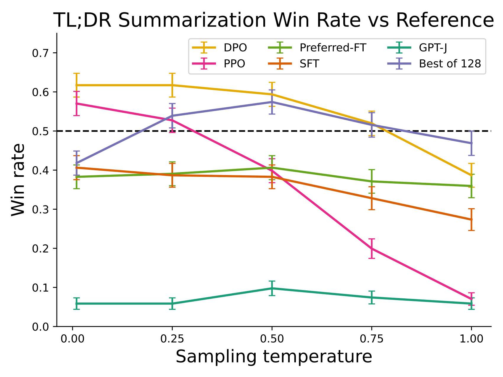
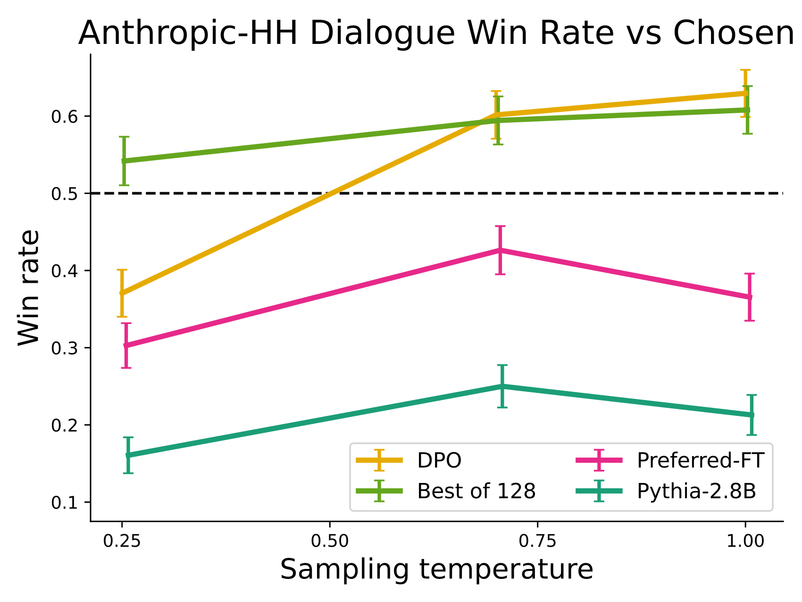
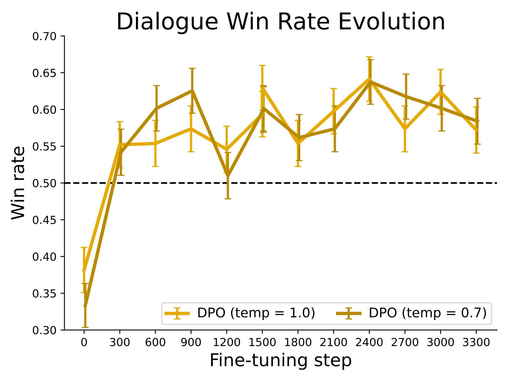
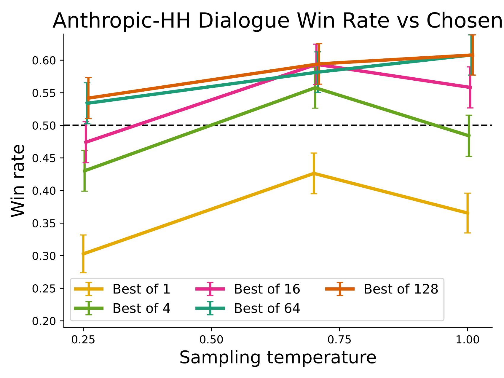
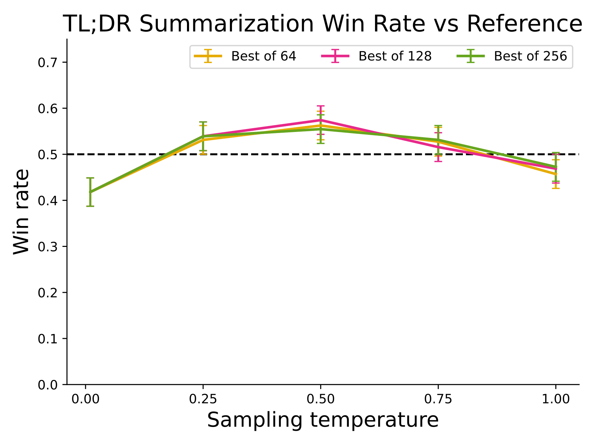
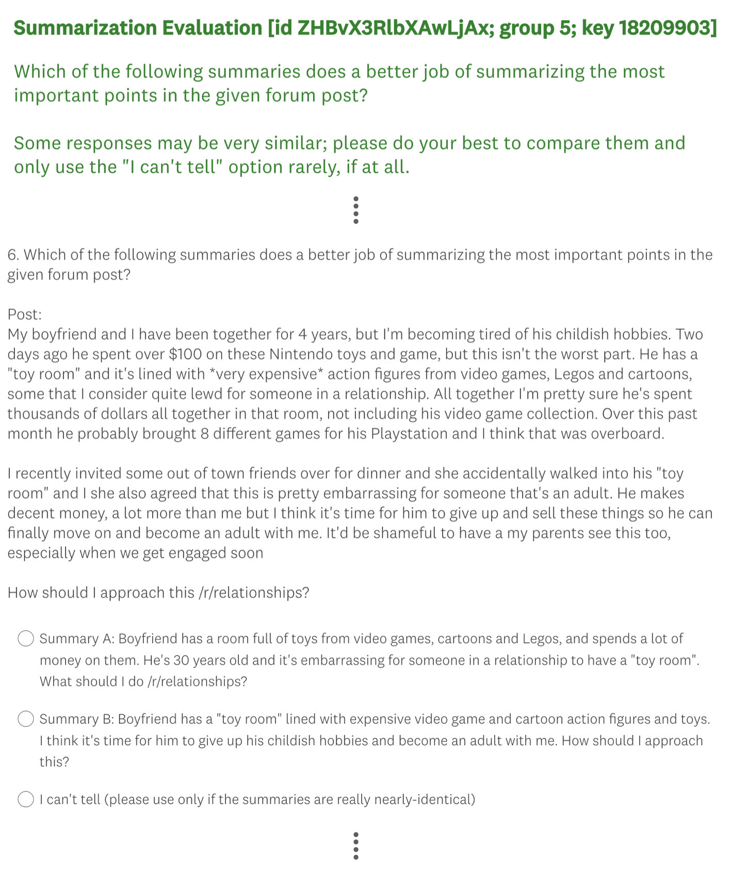

Direct Preference Optimization: Your Language Model is Secretly a Reward Model / 全文中英对照¶
来源：arXiv:2305.18290v3。英文段落后紧接中文，覆盖所取 HTML 版本的主文、附录、图表、脚注与参考文献；公式、数字表和书目信息共用。中文以机器初译为底稿，进行了术语整理与结构核对，尚未逐句人工审定；遇到歧义请以紧邻英文和原论文为准。 原作版权归所列作者，许可见 原作许可；中文译文与版式改写在该许可条件下提供（涉及 SA 时沿用相同许可，涉及 NC 时仅限非商业使用）。
Authors and affiliations / 作者与机构¶
Rafael Rafailov [^footnotex1] 1 Archit Sharma [^footnotex2] [^footnotex3] Eric Mitchell [^footnotex4] [^footnotex5] Stefano Ermon [^footnotex6] [^footnotex7] Christopher D. Manning [^footnotex8] Chelsea Finn [^footnotex9] [^footnotex10] Stanford University [^footnotex11] CZ Biohub Email: {rafailov,architsh,eric.mitchell}@cs.stanford.edu
Abstract / 摘要¶
EN. While large-scale unsupervised language models (LMs) learn broad world knowledge and some reasoning skills, achieving precise control of their behavior is difficult due to the completely unsupervised nature of their training. Existing methods for gaining such steerability collect human labels of the relative quality of model generations and fine-tune the unsupervised LM to align with these preferences, often with reinforcement learning from human feedback (RLHF). However, RLHF is a complex and often unstable procedure, first fitting a reward model that reflects the human preferences, and then fine-tuning the large unsupervised LM using reinforcement learning to maximize this estimated reward without drifting too far from the original model. In this paper we introduce a new parameterization of the reward model in RLHF that enables extraction of the corresponding optimal policy in closed form, allowing us to solve the standard RLHF problem with only a simple classification loss. The resulting algorithm, which we call Direct Preference Optimization (DPO), is stable, performant, and computationally lightweight, eliminating the need for sampling from the LM during fine-tuning or performing significant hyperparameter tuning. Our experiments show that DPO can fine-tune LMs to align with human preferences as well as or better than existing methods. Notably, fine-tuning with DPO exceeds PPO-based RLHF in ability to control sentiment of generations, and matches or improves response quality in summarization and single-turn dialogue while being substantially simpler to implement and train.
中. 虽然大规模无监督语言模型（LM）学习广泛的世界知识和一些推理技能，但由于其训练的完全无监督性质，实现对其行为的精确控制是困难的。获得这种可操纵性的现有方法收集模型生成相对质量的人类标签，并微调无监督的 LM 以符合这些偏好，通常通过人类反馈 (RLHF) 进行强化学习。然而，RLHF 是一个复杂且通常不稳定的过程，首先拟合反映人类偏好的奖励模型，然后使用强化学习对大型无监督 LM 进行微调，以最大化估计的奖励，而不会偏离原始模型太远。在本文中，我们引入了 RLHF 奖励模型的新参数化，它能够以封闭形式提取相应的最优策略，使我们能够仅用简单的分类损失来解决标准 RLHF 问题。由此产生的算法，我们称之为直接偏好优化 (DPO)，稳定、高性能且计算量轻，无需在微调或执行重要的超参数调整期间从 LM 进行采样。我们的实验表明，DPO 可以微调 LM 以符合人类偏好，并且比现有方法更好。值得注意的是，使用 DPO 进行微调在控制各代情绪的能力方面超过了基于 PPO 的 RLHF，并且匹配或提高了摘要和单轮对话中的响应质量，同时大大简化了实施和训练。
Introduction / 简介¶
EN. Large unsupervised language models (LMs) trained on very large datasets acquire surprising capabilities [ 11 , 7 , 42 , 8 ] . However, these models are trained on data generated by humans with a wide variety of goals, priorities, and skillsets. Some of these goals and skillsets may not be desirable to imitate; for example, while we may want our AI coding assistant to understand common programming mistakes in order to correct them, nevertheless, when generating code, we would like to bias our model toward the (potentially rare) high-quality coding ability present in its training data. Similarly, we might want our language model to be aware of a common misconception believed by 50% of people, but we certainly do not want the model to claim this misconception to be true in 50% of queries about it! In other words, selecting the model’s desired responses and behavior from its very wide knowledge and abilities is crucial to building AI systems that are safe, performant, and controllable [ 28 ] . While existing methods typically steer LMs to match human preferences using reinforcement learning (RL), we will show that the RL-based objective used by existing methods can be optimized exactly with a simple binary cross-entropy objective, greatly simplifying the preference learning pipeline.
中. 在非常大的数据集上训练的大型无监督语言模型（LM）获得了令人惊讶的能力[11,7,42,8]。然而，这些模型是根据人类生成的数据进行训练的，这些数据具有各种目标、优先级和技能。其中一些目标和技能可能不适合模仿；例如，虽然我们可能希望人工智能编码助手理解常见的编程错误以便纠正它们，但是，在生成代码时，我们希望我们的模型偏向于其训练数据中存在的（可能罕见的）高质量编码能力。同样，我们可能希望我们的语言模型能够意识到 50% 的人相信的常见误解，但我们当然不希望模型在 50% 的查询中声称这种误解是正确的！换句话说，从广泛的知识和能力中选择模型所需的响应和行为对于构建安全、高性能和可控的人工智能系统至关重要[28]。虽然现有方法通常使用强化学习 (RL) 来引导 LM 匹配人类偏好，但我们将证明现有方法使用的基于 RL 的目标可以通过简单的二元交叉熵目标进行精确优化，从而大大简化偏好学习流程。

EN. Figure 1: DPO optimizes for human preferences while avoiding reinforcement learning. Existing methods for fine-tuning language models with human feedback first fit a reward model to a dataset of prompts and human preferences over pairs of responses, and then use RL to find a policy that maximizes the learned reward. In contrast, DPO directly optimizes for the policy best satisfying the preferences with a simple classification objective, fitting an implicit reward model whose corresponding optimal policy can be extracted in closed form.
中. 图 1：DPO 针对人类偏好进行优化，同时避免强化学习。现有的利用人类反馈微调语言模型的方法首先将奖励模型拟合到提示数据集和人类对响应对的偏好，然后使用强化学习找到最大化学习奖励的策略。相比之下，DPO 通过简单的分类目标直接优化最能满足偏好的策略，拟合隐式奖励模型，该模型可以以封闭形式提取相应的最优策略。
EN. At a high level, existing methods instill the desired behaviors into a language model using curated sets of human preferences representing the types of behaviors that humans find safe and helpful. This preference learning stage occurs after an initial stage of large-scale unsupervised pre-training on a large text dataset. While the most straightforward approach to preference learning is supervised fine-tuning on human demonstrations of high quality responses, the most successful class of methods is reinforcement learning from human (or AI) feedback (RLHF/RLAIF; [ 12 , 2 ] ). RLHF methods fit a reward model to a dataset of human preferences and then use RL to optimize a language model policy to produce responses assigned high reward without drifting excessively far from the original model. While RLHF produces models with impressive conversational and coding abilities, the RLHF pipeline is considerably more complex than supervised learning, involving training multiple LMs and sampling from the LM policy in the loop of training, incurring significant computational costs.
中. 在较高层面上，现有方法使用精选的人类偏好集将所需的行为灌输到语言模型中，这些偏好集代表了人类认为安全和有帮助的行为类型。这个偏好学习阶段发生在对大型文本数据集进行大规模无监督预训练的初始阶段之后。虽然偏好学习最直接的方法是对人类高质量反应演示进行监督微调，但最成功的一类方法是根据人类（或人工智能）反馈进行强化学习（RLHF/RLAIF；[ 12 , 2 ] ）。 RLHF 方法将奖励模型与人类偏好数据集相匹配，然后使用 RL 来优化语言模型策略，以生成分配高奖励的响应，而不会偏离原始模型太远。虽然 RLHF 生成的模型具有令人印象深刻的对话和编码能力，但 RLHF 管道比监督学习复杂得多，涉及训练多个 LM 并在训练循环中从 LM 策略中采样，从而产生大量计算成本。
EN. In this paper, we show how to directly optimize a language model to adhere to human preferences, without explicit reward modeling or reinforcement learning. We propose Direct Preference Optimization (DPO) , an algorithm that implicitly optimizes the same objective as existing RLHF algorithms (reward maximization with a KL-divergence constraint) but is simple to implement and straightforward to train. Intuitively, the DPO update increases the relative log probability of preferred to dispreferred responses, but it incorporates a dynamic, per-example importance weight that prevents the model degeneration that we find occurs with a naive probability ratio objective. Like existing algorithms, DPO relies on a theoretical preference model (such as the Bradley-Terry model; [ 5 ] ) that measures how well a given reward function aligns with empirical preference data. However, while existing methods use the preference model to define a preference loss to train a reward model and then train a policy that optimizes the learned reward model, DPO uses a change of variables to define the preference loss as a function of the policy directly. Given a dataset of human preferences over model responses, DPO can therefore optimize a policy using a simple binary cross entropy objective, producing the optimal policy to an implicit reward function fit to the preference data.
中. 在本文中，我们展示了如何直接优化语言模型以遵循人类偏好，而无需明确的奖励建模或强化学习。我们提出了直接偏好优化（DPO），这是一种隐式优化与现有 RLHF 算法相同目标的算法（具有 KL 散度约束的奖励最大化），但易于实现且易于训练。直观上，DPO 更新增加了首选响应与不首选响应的相对对数概率，但它包含了动态的、每个示例的重要性权重，可以防止我们发现在朴素概率比目标下发生模型退化。与现有算法一样，DPO 依赖于理论偏好模型（例如 Bradley-Terry 模型；[5]），该模型衡量给定奖励函数与经验偏好数据的匹配程度。然而，虽然现有方法使用偏好模型来定义偏好损失来训练奖励模型，然后训练优化学习奖励模型的策略，但 DPO 使用变量的变化将偏好损失直接定义为策略的函数。给定人类对模型响应的偏好数据集，DPO 可以使用简单的二元交叉熵目标来优化策略，从而生成适合偏好数据的隐式奖励函数的最优策略。
EN. Our main contribution is Direct Preference Optimization (DPO), a simple RL-free algorithm for training language models from preferences. Our experiments show that DPO is at least as effective as existing methods, including PPO-based RLHF, for learning from preferences in tasks such as sentiment modulation, summarization, and dialogue, using language models with up to 6B parameters.
中. 我们的主要贡献是直接偏好优化（DPO），这是一种简单的无强化学习算法，用于根据偏好训练语言模型。我们的实验表明，DPO 至少与现有方法（包括基于 PPO 的 RLHF）一样有效，可以使用最多 6B 个参数的语言模型从情绪调节、摘要和对话等任务中的偏好进行学习。
Related Work / 相关工作¶
EN. Self-supervised language models of increasing scale learn to complete some tasks zero-shot [ 33 ] or with few-shot prompts [ 6 , 27 , 11 ] . However, their performance on downstream tasks and alignment with user intent can be significantly improved by fine-tuning on datasets of instructions and human-written completions [ 25 , 38 , 13 , 41 ] . This ‘instruction-tuning’ procedure enables LLMs to generalize to instructions outside of the instruction-tuning set and generally increase their usability [ 13 ] . Despite the success of instruction tuning, relative human judgments of response quality are often easier to collect than expert demonstrations, and thus subsequent works have fine-tuned LLMs with datasets of human preferences, improving proficiency in translation [ 20 ] , summarization [ 40 , 51 ] , story-telling [ 51 ] , and instruction-following [ 28 , 34 ] . These methods first optimize a neural network reward function for compatibility with the dataset of preferences under a preference model such as the Bradley-Terry model [ 5 ] , then fine-tune a language model to maximize the given reward using reinforcement learning algorithms, commonly REINFORCE [ 47 ] , proximal policy optimization (PPO; [ 39 ] ), or variants [ 34 ] . A closely-related line of work leverages LLMs fine-tuned for instruction following with human feedback to generate additional synthetic preference data for targeted attributes such as safety or harmlessness [ 2 ] , using only weak supervision from humans in the form of a text rubric for the LLM’s annotations. These methods represent a convergence of two bodies of work: one body of work on training language models with reinforcement learning for a variety of objectives [ 35 , 29 , 48 ] and another body of work on general methods for learning from human preferences [ 12 , 21 ] . Despite the appeal of using relative human preferences, fine-tuning large language models with reinforcement learning remains a major practical challenge; this work provides a theoretically-justified approach to optimizing relative preferences without RL.
中. 规模不断扩大的自监督语言模型学习以零样本[33]或少量样本提示完成一些任务[6,27,11]。然而，通过对指令数据集和人工编写的完成数据进行微调，可以显着提高它们在下游任务上的性能以及与用户意图的一致性[25,38,13,41]。这种“指令调整”过程使LLM能够推广到指令调整集之外的指令，并普遍提高其可用性[13]。尽管指令调整取得了成功，但人类对响应质量的相对判断通常比专家演示更容易收集，因此后续工作利用人类偏好的数据集对LLM进行了微调，提高了翻译 [20]、总结 [40, 51]、讲故事 [51] 和指令遵循 [28, 34] 的熟练程度。这些方法首先优化神经网络奖励函数，以便与偏好模型（例如 Bradley-Terry 模型 [5]）下的偏好数据集兼容，然后使用强化学习算法（通常是 REINFORCE [47]、近端策略优化（PPO；[39]）或变体 [34] 微调语言模型以最大化给定奖励。密切相关的工作线利用根据人类反馈进行微调的LLM，为目标属性（例如安全性或无害性）生成额外的综合偏好数据[2]，仅使用人类以文本标题形式的弱监督来进行LLM的注释。这些方法代表了两部分工作的融合：一项工作是针对各种目标使用强化学习来训练语言模型[35,29,48]，另一部分工作是根据人类偏好进行学习的一般方法[12,21]。尽管使用相对人类偏好很有吸引力，但通过强化学习对大型语言模型进行微调仍然是一个重大的实际挑战。这项工作提供了一种理论上合理的方法，可以在没有强化学习的情况下优化相对偏好。
EN. Outside of the context of language, learning policies from preferences has been studied in both bandit and reinforcement learning settings, and several approaches have been proposed. Contextual bandit learning using preferences or rankings of actions, rather than rewards, is known as a contextual dueling bandit (CDB; [ 50 , 14 ] ). In the absence of absolute rewards, theoretical analysis of CDBs substitutes the notion of an optimal policy with a von Neumann winner , a policy whose expected win rate against any other policy is at least 50% [ 14 ] . However, in the CDB setting, preference labels are given online, while in learning from human preferences, we typically learn from a fixed batch of offline preference-annotated action pairs [ 49 ] . Similarly, preference-based RL (PbRL) learns from binary preferences generated by an unknown ‘scoring’ function rather than rewards [ 9 , 37 ] . Various algorithms for PbRL exist, including methods that can reuse off-policy preference data, but generally involve first explicitly estimating the latent scoring function (i.e. the reward model) and subsequently optimizing it [ 16 , 9 , 12 , 36 , 21 ] . We instead present a single stage policy learning approach that directly optimizes a policy to satisfy preferences.
中. 在语言背景之外，在强盗学习和强化学习环境中都对根据偏好的学习策略进行了研究，并提出了几种方法。使用偏好或行为排名而不是奖励的情境强盗学习被称为情境决斗强盗（CDB；[ 50 , 14 ] ）。在缺乏绝对回报的情况下，CDB 的理论分析用冯·诺依曼获胜者替代了最优政策的概念，该政策相对于任何其他政策的预期获胜率至少为 50% [14]。然而，在 CDB 设置中，偏好标签是在线给出的，而在从人类偏好中学习时，我们通常从固定批次的离线偏好注释的动作对中学习 [49]。类似地，基于偏好的强化学习 (PbRL) 从未知“评分”函数生成的二元偏好中学习，而不是从奖励中学习 [9, 37]。 PbRL 存在各种算法，包括可以重用离策略偏好数据的方法，但通常涉及首先显式估计潜在评分函数（即奖励模型），然后对其进行优化 [16,9,12,36,21]。相反，我们提出了一种单阶段策略学习方法，可以直接优化策略以满足偏好。
Preliminaries / 预赛¶
EN. We review the RLHF pipeline in Ziegler et al. (and later [ 40 , 1 , 28 ] ). It usually includes three phases: 1) supervised fine-tuning (SFT); 2) preference sampling and reward learning and 3) RL optimization.
中. 我们回顾了 Ziegler 等人的 RLHF 管道。 （以及后来的[40,1,28]）。它通常包括三个阶段：1）监督微调（SFT）； 2) 偏好采样和奖励学习，3) RL 优化。
EN. SFT : RLHF typically begins by fine-tuning a pre-trained LM with supervised learning on high-quality data for the downstream task(s) of interest (dialogue, summarization, etc.), to obtain a model \(\pi^{\text{SFT}}\) .
中. SFT：RLHF 通常首先通过对感兴趣的下游任务（对话、总结等）的高质量数据进行监督学习来微调预训练的 LM，以获得模型 \(\pi^{\text{SFT}}\) 。
EN. Reward Modelling Phase : In the second phase the SFT model is prompted with prompts \(x\) to produce pairs of answers \((y_{1},y_{2})\sim\pi^{\text{SFT}}(y\mid x)\) . These are then presented to human labelers who express preferences for one answer, denoted as \(y_{w}\succ y_{l}\mid x\) where \(y_{w}\) and \(y_{l}\) denotes the preferred and dispreferred completion amongst \((y_{1},y_{2})\) respectively. The preferences are assumed to be generated by some latent reward model \(r^{*}(y,x)\) , which we do not have access to. There are a number of approaches used to model preferences, the Bradley-Terry (BT) [ 5 ] model being a popular choice (although more general Plackett-Luce ranking models [ 32 , 23 ] are also compatible with the framework if we have access to several ranked answers). The BT model stipulates that the human preference distribution \(p^{*}\) can be written as:
中. 奖励建模阶段：在第二阶段，SFT 模型会收到提示 \(x\)，以生成答案对 \((y_{1},y_{2})\sim\pi^{\text{SFT}}(y\mid x)\)。然后将这些结果呈现给表达对一个答案的偏好的人类标记者，表示为 \(y_{w}\succ y_{l}\mid x\)，其中 \(y_{w}\) 和 \(y_{l}\) 分别表示 \((y_{1},y_{2})\) 中首选和不首选的完成。假设偏好是由一些我们无法访问的潜在奖励模型 \(r^{*}(y,x)\) 生成的。有多种方法可用于对偏好进行建模，其中 Bradley-Terry (BT) [5] 模型是一种流行的选择（尽管如果我们可以访问多个排名答案，则更通用的 Plackett-Luce 排名模型 [32, 23] 也与该框架兼容）。 BT模型规定人类偏好分布\(p^{*}\)可以写为：
EN. Assuming access to a static dataset of comparisons \(\mathcal{D}=\bigl\{x^{(i)},y_{w}^{(i)},y_{l}^{(i)}\bigr\}_{i=1}^{N}\) sampled from \(p^{*}\) , we can parametrize a reward model \(r_{\phi}(x,y)\) and estimate the parameters via maximum likelihood. Framing the problem as a binary classification we have the negative log-likelihood loss:
中. 假设访问从 \(p^{*}\) 采样的静态比较数据集 \(\mathcal{D}=\bigl\{x^{(i)},y_{w}^{(i)},y_{l}^{(i)}\bigr\}_{i=1}^{N}\) ，我们可以参数化奖励模型 \(r_{\phi}(x,y)\) 并通过最大似然估计参数。将问题构建为二元分类，我们得到负对数似然损失：
EN. where \(\sigma\) is the logistic function. In the context of LMs, the network \(r_{\phi}(x,y)\) is often initialized from the SFT model \(\pi^{\text{SFT}}(y\mid x)\) with the addition of a linear layer on top of the final transformer layer that produces a single scalar prediction for the reward value [ 51 ] . To ensure a reward function with lower variance, prior works normalize the rewards, such that \(\mathbb{E}_{x,y\sim\mathcal{D}}\left[r_{\phi}(x,y)\right]=0\) for all \(x\) .
中. 其中 \(\sigma\) 是逻辑函数。在 LM 的背景下，网络 \(r_{\phi}(x,y)\) 通常从 SFT 模型 \(\pi^{\text{SFT}}(y\mid x)\) 初始化，并在最终Transformer层顶部添加一个线性层，为奖励值生成单个标量预测 [51]。为了确保奖励函数具有较低的方差，先前的工作对奖励进行标准化，使得所有 \(x\) 都为 \(\mathbb{E}_{x,y\sim\mathcal{D}}\left[r_{\phi}(x,y)\right]=0\) 。
EN. RL Fine-Tuning Phase : During the RL phase, the learned reward function is used to provide feedback to the language model. Following prior works [ 17 , 18 ] , the optimization is formulated as
中. RL 微调阶段：在 RL 阶段，学习到的奖励函数用于向语言模型提供反馈。根据先前的工作[ 17 , 18 ] ，优化公式为
EN. where \(\beta\) is a parameter controlling the deviation from the base reference policy \(\pi_{\text{ref}}\) , namely the initial SFT model \(\pi^{\text{SFT}}\) . In practice, the language model policy \(\pi_{\theta}\) is also initialized to \(\pi^{\text{SFT}}\) . The added constraint is important, as it prevents the model from deviating too far from the distribution on which the reward model is accurate, as well as maintaining the generation diversity and preventing mode-collapse to single high-reward answers. Due to the discrete nature of language generation, this objective is not differentiable and is typically optimized with reinforcement learning. The standard approach [ 51 , 40 , 1 , 28 ] has been to construct the reward function \({r(x,y)=r_{\phi}(x,y)-\beta(\log\pi_{\theta}(y\mid x)-\log\pi_{\text{ref}}(y\mid x))}\) , and maximize using PPO [ 39 ] .
中. 其中 \(\beta\) 是控制与基础参考策略 \(\pi_{\text{ref}}\) 的偏差的参数，即初始 SFT 模型 \(\pi^{\text{SFT}}\) 。在实践中，语言模型策略 \(\pi_{\theta}\) 也被初始化为 \(\pi^{\text{SFT}}\) 。增加的约束很重要，因为它可以防止模型偏离奖励模型准确的分布太远，并保持生成多样性并防止模式崩溃为单一高奖励答案。由于语言生成的离散性，该目标是不可微分的，通常通过强化学习进行优化。标准方法[51,40,1,28]是构建奖励函数\({r(x,y)=r_{\phi}(x,y)-\beta(\log\pi_{\theta}(y\mid x)-\log\pi_{\text{ref}}(y\mid x))}\)，并使用PPO 最大化[39]。
Direct Preference Optimization / 直接偏好优化¶
EN. Motivated by the challenges of applying reinforcement learning algorithms on large-scale problems such as fine-tuning language models, our goal is to derive a simple approach for policy optimization using preferences directly. Unlike prior RLHF methods, which learn a reward and then optimize it via RL, our approach leverages a particular choice of reward model parameterization that enables extraction of its optimal policy in closed form, without an RL training loop. As we will describe next in detail, our key insight is to leverage an analytical mapping from reward functions to optimal policies, which enables us to transform a loss function over reward functions into a loss function over policies. This change-of-variables approach avoids fitting an explicit, standalone reward model, while still optimizing under existing models of human preferences, such as the Bradley-Terry model. In essence, the policy network represents both the language model and the (implicit) reward.
中. 受到将强化学习算法应用于微调语言模型等大规模问题的挑战的激励，我们的目标是导出一种直接使用偏好进行策略优化的简单方法。与之前学习奖励然后通过 RL 对其进行优化的 RLHF 方法不同，我们的方法利用奖励模型参数化的特定选择，能够以封闭形式提取其最优策略，而无需 RL 训练循环。正如我们接下来将详细描述的，我们的关键见解是利用从奖励函数到最优策略的分析映射，这使我们能够将奖励函数的损失函数转换为策略的损失函数。这种变量变化方法避免了拟合明确的、独立的奖励模型，同时仍然在现有的人类偏好模型（例如 Bradley-Terry 模型）下进行优化。本质上，策略网络代表了语言模型和（隐式）奖励。
EN. Deriving the DPO objective. We start with the same RL objective as prior work, Eq. 3 , under a general reward function \(r\) . Following prior work [ 31 , 30 , 19 , 15 ] , it is straightforward to show that the optimal solution to the KL-constrained reward maximization objective in Eq. 3 takes the form:
中. 得出 DPO 目标。我们从与之前的工作相同的 RL 目标开始，方程式： 3、一般奖励函数为\(r\)。继之前的工作[31,30,19,15]之后，很容易证明方程中KL约束奖励最大化目标的最优解。 3 采用以下形式：
EN. where \(Z(x)=\sum_{y}\pi_{\text{ref}}(y\mid x)\exp\left(\frac{1}{\beta}r(x,y)\right)\) is the partition function. See Appendix A.1 for a complete derivation. Even if we use the MLE estimate \(r_{\phi}\) of the ground-truth reward function \(r^{*}\) , it is still expensive to estimate the partition function \(Z(x)\) [ 19 , 15 ] , which makes this representation hard to utilize in practice. However, we can rearrange Eq. 4 to express the reward function in terms of its corresponding optimal policy \(\pi_{r}\) , the reference policy \(\pi_{\text{ref}}\) , and the unknown partition function \(Z(\cdot)\) . Specifically, we first take the logarithm of both sides of Eq. 4 and then with some algebra we obtain:
中. 其中 \(Z(x)=\sum_{y}\pi_{\text{ref}}(y\mid x)\exp\left(\frac{1}{\beta}r(x,y)\right)\) 是配分函数。完整推导请参见附录 A.1。即使我们使用真实奖励函数 \(r^{*}\) 的 MLE 估计 \(r_{\phi}\) ，估计配分函数 \(Z(x)\) [19 , 15 ] 的成本仍然很高，这使得这种表示在实践中很难使用。然而，我们可以重新排列方程。 4 用其相应的最优策略 \(\pi_{r}\)、参考策略 \(\pi_{\text{ref}}\) 和未知配分函数 \(Z(\cdot)\) 来表达奖励函数。具体来说，我们首先对等式两边取对数： 4 然后通过一些代数我们得到：
EN. We can apply this reparameterization to the ground-truth reward \(r^{*}\) and corresponding optimal model \(\pi^{*}\) . Fortunately, the Bradley-Terry model depends only on the difference of rewards between two completions, i.e., \({p^{*}(y_{1}\succ y_{2}\mid x)=\sigma(r^{*}(x,y_{1})-r^{*}(x,y_{2}))}\) . Substituting the reparameterization in Eq. 5 for \(r^{*}(x,y)\) into the preference model Eq. 1 , the partition function cancels, and we can express the human preference probability in terms of only the optimal policy \(\pi^{*}\) and reference policy \(\pi_{\text{ref}}\) . Thus, the optimal RLHF policy \(\pi^{*}\) under the Bradley-Terry model satisfies the preference model:
中. 我们可以将此重新参数化应用于真实奖励 \(r^{*}\) 和相应的最优模型 \(\pi^{*}\) 。幸运的是，Bradley-Terry 模型仅取决于两次完成之间的奖励差异，即 \({p^{*}(y_{1}\succ y_{2}\mid x)=\sigma(r^{*}(x,y_{1})-r^{*}(x,y_{2}))}\) 。代入等式中的重新参数化。将 \(r^{*}(x,y)\) 的 5 代入偏好模型 Eq.如图1所示，配分函数取消，我们可以仅用最优策略 \(\pi^{*}\) 和参考策略 \(\pi_{\text{ref}}\) 来表达人类偏好概率。因此，Bradley-Terry模型下的最优RLHF策略\(\pi^{*}\)满足偏好模型：
EN. The derivation is in Appendix A.2 . While Eq. 6 uses the Bradley-Terry model, we can similarly derive expressions under the more general Plackett-Luce models [ 32 , 23 ] , shown in Appendix A.3 .
中. 推导见附录A.2。而方程。图6使用Bradley-Terry模型，我们可以类似地推导更通用的Plackett-Luce模型[32, 23]下的表达式，如附录A.3所示。
EN. Now that we have the probability of human preference data in terms of the optimal policy rather than the reward model, we can formulate a maximum likelihood objective for a parametrized policy \(\pi_{\theta}\) . Analogous to the reward modeling approach (i.e. Eq. 2 ), our policy objective becomes:
中. 现在我们有了最优策略而不是奖励模型方面的人类偏好数据的概率，我们可以为参数化策略 \(\pi_{\theta}\) 制定最大似然目标。类似于奖励建模方法（即方程 2），我们的政策目标变为：
EN. This way, we fit an implicit reward using an alternative parameterization, whose optimal policy is simply \(\pi_{\theta}\) . Moreover, since our procedure is equivalent to fitting a reparametrized Bradley-Terry model, it enjoys certain theoretical properties, such as consistencies under suitable assumption of the preference data distribution [ 4 ] . In Section 5 , we further discuss theoretical properties of DPO in relation to other works.
中. 这样，我们使用替代参数化来拟合隐式奖励，其最佳策略就是 \(\pi_{\theta}\) 。此外，由于我们的过程相当于拟合重新参数化的 Bradley-Terry 模型，因此它具有某些理论特性，例如在偏好数据分布的适当假设下的一致性[4]。在第 5 节中，我们进一步讨论 DPO 与其他工作相关的理论特性。
EN. What does the DPO update do? For a mechanistic understanding of DPO, it is useful to analyze the gradient of the loss function \(\mathcal{L}_{\text{DPO}}\) . The gradient with respect to the parameters \(\theta\) can be written as:
中. DPO 更新有什么作用？为了从原理上理解 DPO，分析损失函数 \(\mathcal{L}_{\text{DPO}}\) 的梯度很有用。相对于参数 \(\theta\) 的梯度可以写为：
EN. where \(\hat{r}_{\theta}(x,y)=\beta\log\frac{\pi_{\theta}(y\mid x)}{\pi_{\text{ref}}(y\mid x)}\) is the reward implicitly defined by the language model \(\pi_{\theta}\) and reference model \(\pi_{\text{ref}}\) (more in Section 5 ). Intuitively, the gradient of the loss function \(\mathcal{L}_{\text{DPO}}\) increases the likelihood of the preferred completions \(y_{w}\) and decreases the likelihood of dispreferred completions \(y_{l}\) . Importantly, the examples are weighed by how much higher the implicit reward model \(\hat{r}_{\theta}\) rates the dispreferred completions, scaled by \(\beta\) , i.e, how incorrectly the implicit reward model orders the completions, accounting for the strength of the KL constraint. Our experiments suggest the importance of this weighting, as a naïve version of this method without the weighting coefficient can cause the language model to degenerate (Appendix Table 3 ).
中. 其中 \(\hat{r}_{\theta}(x,y)=\beta\log\frac{\pi_{\theta}(y\mid x)}{\pi_{\text{ref}}(y\mid x)}\) 是由语言模型 \(\pi_{\theta}\) 和参考模型 \(\pi_{\text{ref}}\) 隐式定义的奖励（更多内容请参见第 5 节）。直观上，损失函数 \(\mathcal{L}_{\text{DPO}}\) 的梯度增加了首选完成 \(y_{w}\) 的可能性，并降低了不首选完成 \(y_{l}\) 的可能性。重要的是，这些例子是通过隐式奖励模型 \(\hat{r}_{\theta}\) 对不受欢迎的完成的评分高多少来衡量的，并通过 \(\beta\) 进行缩放，即隐式奖励模型对完成的排序有多不正确，考虑了 KL 约束的强度。我们的实验表明了这种加权的重要性，因为没有加权系数的这种方法的简单版本可能会导致语言模型退化（附录表3）。
EN. DPO outline. The general DPO pipeline is as follows: 1) Sample completions \(y_{1},y_{2}\sim\pi_{\text{ref}}(\cdot\mid x)\) for every prompt \(x\) , label with human preferences to construct the offline dataset of preferences \(\mathcal{D}=\{x^{(i)},y_{w}^{(i)},y_{l})^{(i)}\}_{i=1}^{N}\) and 2) optimize the language model \(\pi_{\theta}\) to minimize \(\mathcal{L}_{\text{DPO}}\) for the given \(\pi_{\text{ref}}\) and \(\mathcal{D}\) and desired \(\beta\) . In practice, one would like to reuse preference datasets publicly available, rather than generating samples and gathering human preferences. Since the preference datasets are sampled using \(\pi^{\text{SFT}}\) , we initialize \(\pi_{\text{ref}}=\pi^{\text{SFT}}\) whenever available. However, when \(\pi^{\text{SFT}}\) is not available, we initialize \(\pi_{\text{ref}}\) by maximizing likelihood of preferred completions \({(x,y_{w})}\) , that is, \({\pi_{\text{ref}}=\argmax_{\pi}\mathbb{E}_{x,y_{w}\sim\mathcal{D}}\left[\log\pi(y_{w}\mid x)\right]}\) . This procedure helps mitigate the distribution shift between the true reference distribution which is unavailable, and \(\pi_{\text{ref}}\) used by DPO. Further details related to the implementation and hyperparameters can be found in Appendix B .
中. DPO 概要。一般 DPO 管道如下： 1) 每个提示 \(x\) 的样本完成 \(y_{1},y_{2}\sim\pi_{\text{ref}}(\cdot\mid x)\) ，用人类偏好标记以构建偏好的离线数据集 \(\mathcal{D}=\{x^{(i)},y_{w}^{(i)},y_{l})^{(i)}\}_{i=1}^{N}\) 和 2) 优化语言模型 \(\pi_{\theta}\) 以最小化给定 \(\pi_{\text{ref}}\) 和 \(\mathcal{D}\) 和所需的 \(\mathcal{L}_{\text{DPO}}\) \(\beta\)。在实践中，人们希望重用公开可用的偏好数据集，而不是生成样本并收集人类偏好。由于偏好数据集是使用 \(\pi^{\text{SFT}}\) 进行采样的，因此我们会在可用时初始化 \(\pi_{\text{ref}}=\pi^{\text{SFT}}\) 。然而，当 \(\pi^{\text{SFT}}\) 不可用时，我们通过最大化首选完成 \({(x,y_{w})}\) 的可能性来初始化 \(\pi_{\text{ref}}\) ，即 \({\pi_{\text{ref}}=\argmax_{\pi}\mathbb{E}_{x,y_{w}\sim\mathcal{D}}\left[\log\pi(y_{w}\mid x)\right]}\) 。此过程有助于减轻不可用的真实参考分布与 DPO 使用的 \(\pi_{\text{ref}}\) 之间的分布偏移。有关实现和超参数的更多详细信息可以在附录 B 中找到。
Theoretical Analysis of DPO / DPO的理论分析¶
EN. In this section, we give further interpretation of the DPO method, provide theoretical backing, and relate advantages of DPO to issues with actor critic algorithms used for RLHF (such as PPO [ 39 ] ).
中. 在本节中，我们对 DPO 方法进行进一步解释，提供理论支持，并将 DPO 的优点与用于 RLHF 的参与者批评算法（例如 PPO [39]）的问题联系起来。
Your Language Model Is Secretly a Reward Model / 你的语言模型实际上是一个奖励模型¶
EN. DPO is able to bypass both fitting an explicit reward and performing RL to learn the policy using a single maximum likelihood objective. Note the optimization objective Eq. 5 is equivalent to a Bradley-Terry model with a reward parameterization \(r^{*}(x,y)=\beta\log\frac{\pi^{*}_{\theta}(y\mid x)}{\pi_{\text{ref}}(y\mid x)}\) and we optimize our parametric model \(\pi_{\theta}\) , equivalently to the reward model optimization in Eq. 2 under the change of variables. In this section we will build the theory behind this reparameterization, show that it does not constrain the class of learned reward models, and allows for the exact recovery of the optimal policy. We begin with by defining an equivalence relation between reward functions.
中. DPO 能够绕过拟合显式奖励和执行 RL，以使用单个最大似然目标来学习策略。注意优化目标方程。等式 5 相当于具有奖励参数化 \(r^{*}(x,y)=\beta\log\frac{\pi^{*}_{\theta}(y\mid x)}{\pi_{\text{ref}}(y\mid x)}\) 的 Bradley-Terry 模型，我们优化参数模型 \(\pi_{\theta}\) ，相当于等式 5 中的奖励模型优化。 2.变量变化情况下。在本节中，我们将构建这种重新参数化背后的理论，证明它不会限制学习奖励模型的类别，并且允许精确恢复最优策略。我们首先定义奖励函数之间的等价关系。
Definition 1 . / 定义 1 .¶
EN. We say that two reward functions \(r(x,y)\) and \(r^{\prime}(x,y)\) are equivalent iff \({r(x,y)-r^{\prime}(x,y)=f(x)}\) for some function \(f\) .
中. 我们说两个奖励函数 \(r(x,y)\) 和 \(r^{\prime}(x,y)\) 是等价的，当且仅当对于某些函数 \({r(x,y)-r^{\prime}(x,y)=f(x)}\) 而言是 \(f\) 。
EN. It is easy to see that this is indeed an equivalence relation, which partitions the set of reward functions into classes. We can state the following two lemmas:
中. 很容易看出，这确实是一个等价关系，它将奖励函数集划分为类别。我们可以陈述以下两个引理：
Lemma 1 . / 引理1。¶
EN. Under the Plackett-Luce, and in particular the Bradley-Terry, preference framework, two reward functions from the same class induce the same preference distribution.
中. 在 Plackett-Luce，特别是 Bradley-Terry 偏好框架下，来自同一类别的两个奖励函数会产生相同的偏好分布。
Lemma 2 . / 引理 2 .¶
EN. Two reward functions from the same equivalence class induce the same optimal policy under the constrained RL problem.
中. 来自同一等价类的两个奖励函数在约束强化学习问题下产生相同的最优策略。
EN. The proofs are straightforward and we defer them to Appendix A.5 . The first lemma is a well-known under-specification issue with the Plackett-Luce family of models [ 32 ] . Due to this under-specification, we usually have to impose additional identifiability constraints to achieve any guarantees on the MLE estimates from Eq. 2 [ 4 ] . The second lemma states that all reward functions from the same class yield the same optimal policy, hence for our final objective, we are only interested in recovering an arbitrary reward function from the optimal class. We prove the following Theorem in Appendix A.6 :
中. 证明很简单，我们将其放在附录 A.5 中。第一个引理是 Plackett-Luce 系列模型中众所周知的规格不足问题 [32]。由于这种规格不足，我们通常必须施加额外的可识别性约束，以实现对等式 1 的 MLE 估计的任何保证。 2 [4]。第二个引理指出，同一类别的所有奖励函数都会产生相同的最优策略，因此对于我们的最终目标，我们只对从最优类别恢复任意奖励函数感兴趣。我们在附录 A.6 中证明以下定理：
Theorem 1 . / 定理1．¶
EN. Under mild assumptions, all reward classes consistent with the Plackett-Luce (and Bradley-Terry in particular) models can be represented with the reparameterization \({r(x,y)=\beta\log\frac{\pi(y\mid x)}{\pi_{\text{ref}}(y\mid x)}}\) for some model \(\pi(y\mid x)\) and a given reference model \(\pi_{\text{ref}}(y\mid x)\) .
中. 在温和的假设下，与 Plackett-Luce（特别是 Bradley-Terry）模型一致的所有奖励类别都可以用某些模型 \(\pi(y\mid x)\) 和给定参考模型 \(\pi_{\text{ref}}(y\mid x)\) 的重新参数化 \({r(x,y)=\beta\log\frac{\pi(y\mid x)}{\pi_{\text{ref}}(y\mid x)}}\) 来表示。
Proof Sketch. / 证明草图。¶
EN. Consider any reward function \(r(x,y)\) , which induces a corresponding optimal model \(\pi_{r}(y\mid x)\) , specified by Eq. 4 . We will show that a reward function from the equivalence class of \(r\) can be represented using the reparameterization given above. We define the projection \(f\) as
中. 考虑任何奖励函数 \(r(x,y)\) ，它会产生相应的最优模型 \(\pi_{r}(y\mid x)\) ，由方程式指定。 4.我们将证明，来自 \(r\) 等价类的奖励函数可以使用上面给出的重新参数化来表示。我们将投影 \(f\) 定义为
EN. The operator \(f\) simply normalizes the reward function with the logarithm of the partition function of \(\pi_{r}\) . Since the added normalization term is only a function of the prefix \(x\) , \(f(r;\pi_{\text{ref}},\beta)(x,y)\) is a reward function in the equivalence class of \(r(x,y)\) . Finally, replacing \(r\) with the RHS of Eq. 5 (which holds for any reward function), we have \(f(r;\pi_{\text{ref}},\beta)(x,y)=\beta\log\frac{\pi_{r}(y\mid x)}{\pi_{\text{ref}}(y\mid x)}\) . That is, the projection \(f\) produces a member of the equivalence class of \(r\) with the desired form, and we do not lose any generality in our reward model from the proposed reparameterization. ∎
中. 算子 \(f\) 只是用 \(\pi_{r}\) 配分函数的对数对奖励函数进行归一化。由于添加的归一化项只是前缀 \(x\) 的函数，因此 \(f(r;\pi_{\text{ref}},\beta)(x,y)\) 是 \(r(x,y)\) 等价类中的奖励函数。最后，将 \(r\) 替换为式（1）的 RHS。 5（适用于任何奖励函数），我们有 \(f(r;\pi_{\text{ref}},\beta)(x,y)=\beta\log\frac{\pi_{r}(y\mid x)}{\pi_{\text{ref}}(y\mid x)}\) 。也就是说，投影 \(f\) 生成具有所需形式的 \(r\) 等价类的成员，并且我们不会因建议的重新参数化而失去奖励模型的任何通用性。 ∎
EN. We can alternatively view Theorem 1 as specifying exactly which reward function within each equivalence class the DPO reparameterization selects, that is, the reward function satisfying:
中. 我们也可以将定理 1 视为精确指定 DPO 重新参数化选择的每个等价类中的奖励函数，即满足以下条件的奖励函数：
EN. i.e., \(\pi(y\mid x)\) is a valid distribution (probabilities are positive and sum to 1). However, following Eq. 4 , we can see that Eq. 9 is the partition function of the optimal policy induced by the reward function \(r(x,y)\) . The key insight of the DPO algorithm is that we can impose certain constraints on the under-constrained Plackett-Luce (and Bradley-Terry in particular) family of preference models, such that we preserve the class of representable reward models, but explicitly make the optimal policy in Eq. 4 analytically tractable for all prompts \(x\) .
中. 即，\(\pi(y\mid x)\) 是有效分布（概率为正且总和为 1）。然而，以下等式： 4、我们可以看到式（4）图9是由奖励函数\(r(x,y)\)导出的最优策略的配分函数。 DPO 算法的关键见解是，我们可以对受约束的 Plackett-Luce（特别是 Bradley-Terry）偏好模型系列施加某些约束，这样我们就保留了可表示奖励模型的类别，但在等式 1 中明确制定了最优策略。 4. 分析易处理所有提示\(x\)。
Instability of Actor-Critic Algorithms / Actor-Critic 算法的不稳定性¶
EN. We can also use our framework to diagnose instabilities with standard actor-critic algorithms used for the RLHF, such as PPO. We follow the RLHF pipeline and focus on the RL fine-tuning step outlined in Section 3 . We can draw connections to the control as inference framework [ 22 ] for the constrained RL problem outlined in 3 . We assume a parameterized model \(\pi_{\theta}(y\mid x)\) and minimize \(\mathbb{D}_{\text{KL}}[\pi_{\theta}(y|x)\mid\mid\pi^{*}(y\mid x)]\) where \(\pi^{*}\) is the optimal policy from Eq. 7 induced by the reward function \(r_{\phi}(y,x)\) . With some algebra this leads to the optimization objective:
中. 我们还可以使用我们的框架通过用于 RLHF 的标准参与者批评算法（例如 PPO）来诊断不稳定性。我们遵循 RLHF 流程，重点关注第 3 节中概述的 RL 微调步骤。我们可以将控制作为推理框架[22]，用于 3 中概述的约束强化学习问题。我们假设参数化模型 \(\pi_{\theta}(y\mid x)\) 并最小化 \(\mathbb{D}_{\text{KL}}[\pi_{\theta}(y|x)\mid\mid\pi^{*}(y\mid x)]\)，其中 \(\pi^{*}\) 是方程式中的最优策略。 7 由奖励函数 \(r_{\phi}(y,x)\) 诱导。通过一些代数，这可以得出优化目标：
EN. This is the same objective optimized in prior works [ 51 , 40 , 1 , 28 ] using the DPO-equivalent reward for the reward class of \(r_{\phi}\) . In this setting, we can interpret the normalization term in \(f(r_{\phi},\pi_{\text{ref}},\beta)\) as the soft value function of the reference policy \(\pi_{\text{ref}}\) . While this term does not affect the optimal solution, without it, the policy gradient of the objective could have high variance, making learning unstable. We can accommodate for the normalization term using a learned value function, but that can also be difficult to optimize. Alternatively, prior works have normalized rewards using a human completion baseline, essentially a single sample Monte-Carlo estimate of the normalizing term. In contrast the DPO reparameterization yields a reward function that does not require any baselines.
中. 这与之前的作品 [51,40,1,28] 中使用 \(r_{\phi}\) 奖励类别的 DPO 等效奖励优化的目标相同。在此设置中，我们可以将 \(f(r_{\phi},\pi_{\text{ref}},\beta)\) 中的归一化项解释为参考策略 \(\pi_{\text{ref}}\) 的软值函数。虽然此项不会影响最优解，但如果没有它，目标的策略梯度可能会具有较高的方差，从而导致学习不稳定。我们可以使用学习值函数来适应归一化项，但这也可能难以优化。或者，之前的工作使用人类完成基线（本质上是标准化项的单个样本蒙特卡洛估计）对奖励进行标准化。相比之下，DPO 重新参数化产生不需要任何基线的奖励函数。
Experiments / 实验¶
EN. In this section, we empirically evaluate DPO’s ability to train policies directly from preferences. First, in a well-controlled text-generation setting, we ask: how efficiently does DPO trade off maximizing reward and minimizing KL-divergence with the reference policy, compared to common preference learning algorithms such as PPO? Next, we evaluate DPO’s performance on larger models and more difficult RLHF tasks, including summarization and dialogue. We find that with almost no tuning of hyperparameters, DPO tends to perform as well or better than strong baselines like RLHF with PPO as well as returning the best of \(N\) sampled trajectories under a learned reward function. Before presenting these results, we describe the experimental set-up; additional details are in Appendix C .
中. 在本节中，我们将根据经验评估 DPO 直接根据偏好训练政策的能力。首先，在控制良好的文本生成环境中，我们问：与常见的偏好学习算法（例如 PPO）相比，DPO 在最大化奖励和最小化 KL 散度与参考策略之间权衡的效率如何？接下来，我们评估 DPO 在更大模型和更困难的 RLHF 任务（包括摘要和对话）上的表现。我们发现，在几乎不调整超参数的情况下，DPO 往往表现得与 RLHF 和 PPO 等强基线一样好甚至更好，并且在学习奖励函数下返回 \(N\) 采样轨迹的最佳结果。在展示这些结果之前，我们描述实验设置；其他详细信息参见附录 C。
EN. Tasks. Our experiments explore three different open-ended text generation tasks. For all experiments, algorithms learn a policy from a dataset of preferences \(\mathcal{D}=\bigl\{x^{(i)},y_{w}^{(i)},y_{l}^{(i)}\bigr\}_{i=1}^{N}\) . In controlled sentiment generation , \(x\) is a prefix of a movie review from the IMDb dataset [ 24 ] , and the policy must generate \(y\) with positive sentiment. In order to perform a controlled evaluation, for this experiment we generate preference pairs over generations using a pre-trained sentiment classifier, where \(p(\text{positive}\mid x,y_{w})>p(\text{positive}\mid x,y_{l})\) . For SFT, we fine-tune GPT-2-large until convergence on reviews from the train split of the IMDB dataset (further details in App C.1 ). In summarization , \(x\) is a forum post from Reddit; the policy must generate a summary \(y\) of the main points in the post. Following prior work, we use the Reddit TL;DR summarization dataset [ 43 ] along with human preferences gathered by Stiennon et al. . We use an SFT model fine-tuned on human-written forum post summaries 2 with the TRLX [ 44 ] framework for RLHF. The human preference dataset was gathered by Stiennon et al. on samples from a different, but similarly-trained, SFT model. Finally, in single-turn dialogue , \(x\) is a human query, which may be anything from a question about astrophysics to a request for relationship advice. A policy must produce an engaging and helpful response \(y\) to a user’s query; we use the Anthropic Helpful and Harmless dialogue dataset [ 1 ] , containing 170k dialogues between a human and an automated assistant. Each transcript ends with a pair of responses generated by a large (although unknown) language model along with a preference label denoting the human-preferred response. In this setting, no pre-trained SFT model is available; we therefore fine-tune an off-the-shelf language model on only the preferred completions to form the SFT model.
中. 任务。我们的实验探索了三种不同的开放式文本生成任务。对于所有实验，算法从偏好数据集中学习策略 \(\mathcal{D}=\bigl\{x^{(i)},y_{w}^{(i)},y_{l}^{(i)}\bigr\}_{i=1}^{N}\) 。在受控情绪生成中，\(x\)是来自IMDb数据集[24]的电影评论的前缀，并且该策略必须生成具有积极情绪的\(y\)。为了执行受控评估，在本实验中，我们使用预训练的情感分类器生成几代人的偏好对，其中 \(p(\text{positive}\mid x,y_{w})>p(\text{positive}\mid x,y_{l})\) 。对于 SFT，我们对 GPT-2-large 进行微调，直到 IMDB 数据集的训练分割中的评论收敛（更多详细信息请参见 App C.1）。综上所述，\(x\)是来自Reddit的论坛帖子；该政策必须生成帖子中要点的摘要 \(y\)。继之前的工作之后，我们使用 Reddit TL;DR 总结数据集 [43] 以及 Stiennon 等人收集的人类偏好。 。我们使用在人工编写的论坛帖子摘要 2 上微调的 SFT 模型以及 RLHF 的 TRLX [44] 框架。人类偏好数据集由 Stiennon 等人收集。来自不同但经过类似训练的 SFT 模型的样本。最后，在单轮对话中，\(x\) 是一个人类查询，可以是从有关天体物理学的问题到请求关系建议的任何内容。策略必须对用户的查询产生有吸引力且有用的响应 \(y\)；我们使用 Anthropic Helpful and Harmless 对话数据集 [1]，其中包含人类和自动助理之间的 170k 对话。每个转录本以一对由大型（尽管未知）语言模型生成的响应以及表示人类首选响应的偏好标签结束。在这种情况下，没有预训练的 SFT 模型可用；因此，我们仅在首选补全上对现成的语言模型进行微调，以形成 SFT 模型。


EN. Figure 2: Left. The frontier of expected reward vs KL to the reference policy. DPO provides the highest expected reward for all KL values, demonstrating the quality of the optimization. Right. TL;DR summarization win rates vs. human-written summaries, using GPT-4 as evaluator. DPO exceeds PPO’s best-case performance on summarization, while being more robust to changes in the sampling temperature.
中. 图 2：左。预期奖励与参考策略 KL 的边界。 DPO 为所有 KL 值提供最高的预期奖励，证明了优化的质量。正确的。 TL;DR 摘要胜率与人工编写的摘要的比较，使用 GPT-4 作为评估器。 DPO 在汇总方面超过了 PPO 的最佳情况性能，同时对采样温度的变化更加稳健。
EN. Evaluation. Our experiments use two different approaches to evaluation. In order to analyze the effectiveness of each algorithm in optimizing the constrained reward maximization objective, in the controlled sentiment generation setting we evaluate each algorithm by its frontier of achieved reward and KL-divergence from the reference policy; this frontier is computable because we have acccess to the ground-truth reward function (a sentiment classifier). However, in the real world, the ground truth reward function is not known; therefore, we evaluate algorithms with their win rate against a baseline policy, using GPT-4 as a proxy for human evaluation of summary quality and response helpfulness in the summarization and single-turn dialogue settings, respectively. For summarization, we use reference summaries in the test set as the baseline; for dialogue, we use the preferred response in the test dataset as the baseline. While existing studies suggest LMs can be better automated evaluators than existing metrics [ 10 ] , we conduct a human study to justify our usage of GPT-4 for evaluation in Sec. 6.4 . We find GPT-4 judgments correlate strongly with humans, with human agreement with GPT-4 typically similar or higher than inter-human annotator agreement.
中. 评估。我们的实验使用两种不同的评估方法。为了分析每种算法在优化约束奖励最大化目标方面的有效性，在受控情绪生成设置中，我们通过其实现奖励的前沿和与参考策略的 KL 散度来评估每种算法；这个边界是可计算的，因为我们可以访问真实奖励函数（情感分类器）。然而，在现实世界中，真实奖励函数是未知的；因此，我们根据基线策略来评估算法的胜率，并分别使用 GPT-4 作为人工评估摘要质量和单轮对话设置中响应有用性的代理。为了进行总结，我们使用测试集中的参考摘要作为基线；对于对话，我们使用测试数据集中的首选响应作为基线。虽然现有研究表明 LM 可以成为比现有指标更好的自动化评估器 [10]，但我们进行了一项人类研究来证明我们在第 2 节中使用 GPT-4 进行评估的合理性。 6.4.我们发现 GPT-4 判断与人类密切相关，人类与 GPT-4 的一致性通常类似于或高于人类注释者之间的一致性。
EN. Methods. In addition to DPO, we evaluate several existing approaches to training language models to adhere to human preferences. Most simply, we explore zero-shot prompting with GPT-J [ 45 ] in the summarization task and 2-shot prompting with Pythia-2.8B [ 3 ] in the dialogue task. In addition, we evaluate the SFT model as well as Preferred-FT , which is a model fine-tuned with supervised learning on the chosen completion \(y_{w}\) from either the SFT model (in controlled sentiment and summarization) or a generic LM (in single-turn dialogue). Another pseudo-supervised method is Unlikelihood [ 46 ] , which simply optimizes the policy to maximize the probability assigned to \(y_{w}\) and minimize the probability assigned to \(y_{l}\) ; we use an optional coefficient \(\alpha\in[0,1]\) on the ‘unlikelihood’ term. We also consider PPO [ 39 ] using a reward function learned from the preference data and PPO-GT , which is an oracle that learns from the ground truth reward function available in the controlled sentiment setting. In our sentiment experiments, we use two implementations of PPO-GT, one of-the-shelf version [ 44 ] as well as a modified version that normalizes rewards and further tunes hyperparameters to improve performance (we also use these modifications when running ‘normal’ PPO with learned rewards). Finally, we consider the Best of \(N\) baseline, sampling \(N\) responses from the SFT model (or Preferred-FT in dialogue) and returning the highest-scoring response according to a reward function learned from the preference dataset. This high-performing method decouples the quality of the reward model from the PPO optimization, but is computationally impractical even for moderate \(N\) as it requires sampling \(N\) completions for every query at test time.
中. 方法。除了 DPO 之外，我们还评估了几种现有的训练语言模型的方法，以符合人类的偏好。最简单的是，我们在摘要任务中探索使用 GPT-J [45] 的零样本提示，在对话任务中使用 Pythia-2.8B [3] 探索 2 样本提示。此外，我们还评估了 SFT 模型以及 Preferred-FT ，这是一个通过监督学习对来自 SFT 模型（在受控情绪和摘要中）或通用 LM（在单轮对话中）选择的完成 \(y_{w}\) 进行微调的模型。另一种伪监督方法是 Likelihood [46]，它简单地优化策略以最大化分配给 \(y_{w}\) 的概率并最小化分配给 \(y_{l}\) 的概率；我们在“不可能”项上使用可选系数 \(\alpha\in[0,1]\)。我们还考虑 PPO [39] 使用从偏好数据和 PPO-GT 中学习的奖励函数，PPO-GT 是一个从受控情绪设置中可用的真实奖励函数学习的预言机。在我们的情感实验中，我们使用 PPO-GT 的两种实现，一种是现成版本 [44]，另一种是对奖励进行标准化并进一步调整超参数以提高性能的修改版本（在运行具有学习奖励的“正常”PPO 时，我们也使用这些修改）。最后，我们考虑 \(N\) 基线的最佳值，从 SFT 模型（或对话中的 Preferred-FT）采样 \(N\) 响应，并根据从偏好数据集中学习的奖励函数返回最高得分的响应。这种高性能方法将奖励模型的质量与 PPO 优化解耦，但即使对于中等的 \(N\) 在计算上也是不切实际的，因为它需要在测试时对每个查询的 \(N\) 完成进行采样。
How well can DPO optimize the RLHF objective? / DPO 能够如何优化 RLHF 目标？¶


EN. Figure 3: Left. Win rates computed by GPT-4 for Anthropic-HH one-step dialogue; DPO is the only method that improves over chosen summaries in the Anthropic-HH test set. Right. Win rates for different sampling temperatures over the course of training. DPO’s improvement over the dataset labels is fairly stable over the course of training for different sampling temperatures.
中. 图 3：左。由 GPT-4 计算的 Anthropic-HH 一步对话的获胜率； DPO 是唯一比 Anthropic-HH 测试集中所选摘要有所改进的方法。正确的。训练过程中不同采样温度的胜率。在不同采样温度的训练过程中，DPO 对数据集标签的改进相当稳定。
EN. The KL-constrained reward maximization objective used in typical RLHF algorithms balances exploitation of reward while restricting the policy from deviating far from the reference policy. Therefore, when comparing algorithms, we must take into account both reward achieved as well as the KL discrepancy; achieving slightly higher reward but with much higher KL is not necessarily desirable. Figure 2 shows the reward-KL frontier for various algorithms in the sentiment setting. We execute multiple training runs for each algorithm, using a different hyperparameter for policy conservativeness in each run (target KL \(\in\{3,6,9,12\}\) for PPO, \(\beta\in\{0.05,0.1,1,5\}\) , \(\alpha\in\{0.05,0.1,0.5,1\}\) for unlikelihood, random seeds for preferred-FT). This sweep includes 22 runs in total. After each 100 training steps until convergence, we evaluate each policy on a set of test prompts, computing the average reward under the true reward function as well as the average sequence-level KL 3 with the reference policy \(\text{KL}\left(\pi\mid\mid\pi_{\text{ref}}\right)\) . We find that DPO produces by far the most efficient frontier, achieving the highest reward while still achieving low KL. This result is particularly notable for multiple reasons. First, DPO and PPO optimize the same objective, but DPO is notably more efficient; DPO’s reward/KL tradeoff strictly dominates PPO. Second, DPO achieves a better frontier than PPO, even when PPO can access ground truth rewards (PPO-GT).
中. 典型 RLHF 算法中使用的 KL 约束奖励最大化目标可以平衡奖励的利用，同时限制策略偏离参考策略太远。因此，在比较算法时，我们必须同时考虑获得的奖励和KL差异；获得稍高的奖励但获得更高的 KL 并不一定是可取的。图 2 显示了情感设置中各种算法的奖励 KL 边界。我们为每个算法执行多次训练运行，在每次运行中使用不同的超参数来实现策略保守性（PPO 的目标 KL \(\in\{3,6,9,12\}\)，不可能的目标 \(\beta\in\{0.05,0.1,1,5\}\) 、 \(\alpha\in\{0.05,0.1,0.5,1\}\)，首选 FT 的随机种子）。本次扫荡共包括22次运行。每 100 个训练步骤直到收敛，我们在一组测试提示上评估每个策略，计算真实奖励函数下的平均奖励以及使用参考策略 \(\text{KL}\left(\pi\mid\mid\pi_{\text{ref}}\right)\) 的平均序列级别 KL 3 。我们发现 DPO 产生了迄今为止最有效的前沿，实现了最高的奖励，同时仍然实现了较低的 KL。由于多种原因，这一结果尤其引人注目。首先，DPO和PPO优化相同的目标，但DPO的效率明显更高； DPO 的奖励/KL 权衡严格支配 PPO。其次，即使 PPO 可以获得真实奖励（PPO-GT），DPO 也取得了比 PPO 更好的前沿。
Can DPO scale to real preference datasets? / DPO 可以扩展到真实偏好数据集吗？¶
EN. Next, we evaluate fine-tuning performance of DPO on summarization and single-turn dialogue. For summarization, automatic evaluation metrics such as ROUGE can be poorly correlated with human preferences [ 40 ] , and prior work has found that fine-tuning LMs using PPO on human preferences to provide more effective summaries. We evaluate different methods by sampling completions on the test split of TL;DR summarization dataset, and computing the average win rate against reference completions in the test set. The completions for all methods are sampled at temperatures varying from 0.0 to 1.0, and the win rates are shown in Figure 2 (right). DPO, PPO and Preferred-FT all fine-tune the same GPT-J SFT model 4 . We find that DPO has a win rate of approximately 61% at a temperature of 0.0, exceeding the performance of PPO at 57% at its optimal sampling temperature of 0.0. DPO also achieves a higher maximum win rate compared to the best of \(N\) baseline. We note that we did not meaningfully tune DPO’s \(\beta\) hyperparameter, so these results may underestimate DPO’s potential. Moreover, we find DPO to be much more robust to the sampling temperature than PPO, the performance of which can degrade to that of the base GPT-J model at high temperatures. Preferred-FT does not improve significantly over the SFT model. We also compare DPO and PPO head-to-head in human evaluations in Section 6.4 , where DPO samples at temperature 0.25 were preferred 58% times over PPO samples at temperature 0.
中. 接下来，我们评估 DPO 在摘要和单轮对话方面的微调性能。就总结而言，诸如 ROUGE 之类的自动评估指标与人类偏好的相关性很差 [40]，并且之前的工作发现，使用 PPO 对人类偏好进行微调 LM 可以提供更有效的总结。我们通过对 TL;DR 总结数据集的测试部分的完成情况进行采样来评估不同的方法，并根据测试集中的参考完成情况计算平均获胜率。所有方法的完成情况都是在 0.0 到 1.0 的温度范围内进行采样的，获胜率如图 2（右）所示。 DPO、PPO 和 Preferred-FT 都对相同的 GPT-J SFT 模型 4 进行了微调。我们发现，DPO 在 0.0 温度下的胜率约为 61%，超过了 PPO 在最佳采样温度 0.0 下的 57% 的性能。与最好的 \(N\) 基线相比，DPO 还实现了更高的最大胜率。我们注意到，我们没有有意义地调整 DPO 的 \(\beta\) 超参数，因此这些结果可能低估了 DPO 的潜力。此外，我们发现 DPO 对采样温度的鲁棒性比 PPO 强得多，而 PPO 的性能在高温下可能会下降到基本 GPT-J 模型的性能。 Preferred-FT 与 SFT 模型相比并没有显着改善。我们还在第 6.4 节中在人体评估中对 DPO 和 PPO 进行了正面比较，其中温度 0.25 时的 DPO 样本比温度 0 时的 PPO 样本的偏好度高 58%。
EN. On single-turn dialogue, we evaluate the different methods on the subset of the test split of the Anthropic HH dataset [ 1 ] with one step of human-assistant interaction. GPT-4 evaluations use the preferred completions on the test as the reference to compute the win rate for different methods. As there is no standard SFT model for this task, we start with a pre-trained Pythia-2.8B, use Preferred-FT to train a reference model on the chosen completions such that completions are within distribution of the model, and then train using DPO. We also compare against the best of 128 Preferred-FT completions (we found the Best of \(N\) baseline plateaus at 128 completions for this task; see Appendix Figure 4 ) and a 2-shot prompted version of the Pythia-2.8B base model, finding DPO performs as well or better for the best-performing temperatures for each method. We also evaluate an RLHF model trained with PPO on the Anthropic HH dataset 5 from a well-known source 6 , but are unable to find a prompt or sampling temperature that gives performance better than the base Pythia-2.8B model. Based on our results from TL;DR and the fact that both methods optimize the same reward function, we consider Best of 128 a rough proxy for PPO-level performance. Overall, DPO is the only computationally efficient method that improves over the preferred completions in the Anthropic HH dataset, and provides similar or better performance to the computationally demanding Best of 128 baseline. Finally, Figure 3 shows that DPO converges to its best performance relatively quickly.
中. 在单轮对话中，我们通过人类助手交互的一步来评估 Anthropic HH 数据集 [1] 的测试分割子集上的不同方法。 GPT-4 评估使用测试中的首选完成情况作为计算不同方法胜率的参考。由于此任务没有标准的 SFT 模型，因此我们从预训练的 Pythia-2.8B 开始，使用 Preferred-FT 在所选完成上训练参考模型，以使完成在模型的分布范围内，然后使用 DPO 进行训练。我们还与 128 个 Preferred-FT 完成中的最佳结果（我们在该任务的 128 个完成中发现了 \(N\) 基线平台的最佳结果；参见附录图 4）和 Pythia-2.8B 基本模型的 2 次提示版本进行比较，发现 DPO 对于每种方法的最佳性能温度表现相同或更好。我们还评估了在来自知名来源 6 的 Anthropic HH 数据集 5 上使用 PPO 训练的 RLHF 模型，但无法找到比基本 Pythia-2.8B 模型性能更好的提示或采样温度。根据 TL;DR 的结果以及两种方法优化相同奖励函数的事实，我们认为 Best of 128 是 PPO 级别性能的粗略代理。总体而言，DPO 是唯一一种计算高效的方法，它比 Anthropic HH 数据集中的首选完成方法有所改进，并提供与计算要求较高的 Best of 128 基线类似或更好的性能。最后，图 3 显示 DPO 相对较快地收敛到其最佳性能。
Generalization to a new input distribution / 推广到新的输入分布¶
| Win rate vs. ground truth 胜率与真实情况 |
Win rate vs. ground truth 胜率与真实情况 |
|
|---|---|---|
| Alg. 藻类。 |
Temp \(0\) 温度 \(0\) |
Temp \(0.25\) 温度 \(0.25\) |
| DPO 数据保护组织 |
0.36 | 0.31 |
| PPO 聚苯醚 |
0.26 | 0.23 |
EN. Table 1: GPT-4 win rates vs. ground truth summaries for out-of-distribution CNN/DailyMail input articles.
中. 表 1：分布外 CNN/DailyMail 输入文章的 GPT-4 胜率与真实摘要。
EN. To further compare the performance of PPO and DPO under distribution shifts, we evaluate the PPO and DPO policies from our Reddit TL;DR summarization experiment on a different distribution, news articles in the test split of the CNN/DailyMail dataset [ 26 ] , using the best sampling temperatures from TL;DR (0 and 0.25). The results are presented in Table 1 . We computed the GPT-4 win rate against the ground-truth summaries in the datasets, using the same GPT-4 (C) prompt we used for Reddit TL;DR, but replacing the words “forum post” with “news article”. For this new distribution, DPO continues to outperform the PPO policy by a significant margin. This experiment provides initial evidence that DPO policies can generalize similarly well to PPO policies, even though DPO does not use the additional unlabeled Reddit TL;DR prompts that PPO uses.
中. 为了进一步比较 PPO 和 DPO 在分布变化下的性能，我们使用来自 TL;DR 的最佳采样温度（0 和 0.25），在 CNN/DailyMail 数据集测试分割中的不同分布、新闻文章上评估了 Reddit TL;DR 总结实验中的 PPO 和 DPO 策略。结果如表1所示。我们使用与 Reddit TL;DR 相同的 GPT-4 (C) 提示，但将“论坛帖子”替换为“新闻文章”，根据数据集中的真实摘要计算了 GPT-4 获胜率。对于这个新的分配，DPO 的表现继续大幅优于 PPO 政策。此实验提供了初步证据，表明 DPO 策略可以很好地推广到 PPO 策略，即使 DPO 不使用 PPO 使用的附加未标记 Reddit TL;DR 提示。
Validating GPT-4 judgments with human judgments / 用人类判断验证 GPT-4 判断¶
EN. We conduct a human study to verify the reliability of GPT-4’s judgments, using the results of the TL;DR summarization experiment and two different GPT-4 prompts. The GPT-4 (S) (simple) prompt simply asks for which summary better-summarizes the important information in the post. The GPT-4 (C) (concise) prompt also asks for which summary is more concise; we evaluate this prompt because we find that GPT-4 prefers longer, more repetitive summaries than humans do with the GPT-4 (S) prompt. See Appendix C.2 for the complete prompts. We perform three comparisons, using the highest (DPO, temp. 0.25), the lowest (PPO, temp. 1.0), and a
中. 我们利用 TL;DR 总结实验的结果和两种不同的 GPT-4 提示，进行了人体研究来验证 GPT-4 判断的可靠性。 GPT-4（S）（简单）提示只是询问哪个摘要更好 - 总结了帖子中的重要信息。 GPT-4（C）（简洁）提示还询问哪个摘要更简洁；我们评估这个提示是因为我们发现 GPT-4 比人类使用 GPT-4 (S) 提示更喜欢更长、更多重复的摘要。完整提示请参见附录 C.2。我们进行了三项比较，使用最高的（DPO，温度 0.25）、最低的（PPO，温度 1.0）和
| DPO 数据保护组织 |
SFT 快速傅里叶变换 |
PPO-1 多酚氧化酶1 |
|
|---|---|---|---|
| N respondents N 受访者 |
272 | 122 | 199 |
| GPT-4 (S) win % GPT-4 (S) 胜率 |
47 | 27 | 13 |
| GPT-4 (C) win % GPT-4 (C) 胜率 |
54 | 32 | 12 |
| Human win % 人类获胜% |
58 | 43 | 17 |
| GPT-4 (S)-H agree GPT-4 (S)-H 同意 |
70 | 77 | 86 |
| GPT-4 (C)-H agree GPT-4 (C)-H 同意 |
67 | 79 | 85 |
| H-H agree H-H 同意 |
65 | - | 87 |
EN. Table 2: Comparing human and GPT-4 win rates and per-judgment agreement on TL;DR summarization samples. Humans agree with GPT-4 about as much as they agree with each other. Each experiment compares a summary from the stated method with a summary from PPO with temperature 0.
中. 表 2：比较人类和 GPT-4 的胜率以及 TL;DR 总结样本的每次判断一致性。人类对 GPT-4 的认同程度与他们对彼此的认同程度一样。每个实验都会将所述方法的摘要与温度为 0 的 PPO 的摘要进行比较。
EN. middle-performing (SFT, temp. 0.25) method with the aim of covering a diversity of sample qualities; all three methods are compared against greedily-sampled PPO (its best-performing temperature). We find that with both prompts, GPT-4 tends to agree with humans about as often as humans agree with each other, suggesting that GPT-4 is a reasonable proxy for human evaluations (due to limited human raters, we only collect multiple human judgments for the DPO and PPO-1 comparisons). Overall, the GPT-4 (C) prompt generally provides win rates more representative of humans; we therefore use this prompt for the main results in Section 6.2 . For additional details about the human study, including the web interface presented to raters and the list of human volunteers, see Appendix D.3 .
中. 中等性能（SFT，温度 0.25）方法，旨在覆盖各种样品质量；所有三种方法都与贪婪采样的 PPO（其最佳性能温度）进行比较。我们发现，在这两种提示下，GPT-4 倾向于与人类达成一致的频率与人类彼此达成一致的频率相同，这表明 GPT-4 是人类评估的合理代理（由于人类评估者有限，我们仅收集多个人类判断来比较 DPO 和 PPO-1）。总体而言，GPT-4 (C) 提示通常提供更能代表人类的胜率；因此，我们使用此提示来获取第 6.2 节中的主要结果。有关人体研究的更多详细信息，包括向评估者提供的网络界面和人类志愿者列表，请参阅附录 D.3。
Discussion / 讨论¶
EN. Learning from preferences is a powerful, scalable framework for training capable, aligned language models. We have introduced DPO, a simple training paradigm for training language models from preferences without reinforcement learning. Rather than coercing the preference learning problem into a standard RL setting in order to use off-the-shelf RL algorithms, DPO identifies a mapping between language model policies and reward functions that enables training a language model to satisfy human preferences directly , with a simple cross-entropy loss, without reinforcement learning or loss of generality. With virtually no tuning of hyperparameters, DPO performs similarly or better than existing RLHF algorithms, including those based on PPO; DPO thus meaningfully reduces the barrier to training more language models from human preferences.
中. 从偏好中学习是一个强大的、可扩展的框架，用于训练有能力的、一致的语言模型。我们引入了 DPO，这是一种简单的训练范例，用于根据偏好训练语言模型，无需强化学习。 DPO 不是为了使用现成的 RL 算法而将偏好学习问题强制纳入标准 RL 设置中，而是确定语言模型策略和奖励函数之间的映射，从而能够通过简单的交叉熵损失来训练语言模型直接满足人类偏好，而无需强化学习或失去通用性。由于几乎无需调整超参数，DPO 的性能与现有 RLHF 算法（包括基于 PPO 的算法）类似或更好；因此，DPO 有意义地减少了根据人类偏好训练更多语言模型的障碍。
EN. Limitations & Future Work. Our results raise several important questions for future work. How does the DPO policy generalize out of distribution, compared with learning from an explicit reward function? Our initial results suggest that DPO policies can generalize similarly to PPO-based models, but more comprehensive study is needed. For example, can training with self-labeling from the DPO policy similarly make effective use of unlabeled prompts? On another front, how does reward over-optimization manifest in the direct preference optimization setting, and is the slight decrease in performance in Figure 3 -right an instance of it? Additionally, while we evaluate models up to 6B parameters, exploration of scaling DPO to state-of-the-art models orders of magnitude larger is an exciting direction for future work. Regarding evaluations, we find that the win rates computed by GPT-4 are impacted by the prompt; future work may study the best way to elicit high-quality judgments from automated systems. Finally, many possible applications of DPO exist beyond training language models from human preferences, including training generative models in other modalities.
中. 局限性和未来的工作。我们的结果为未来的工作提出了几个重要问题。与从显式奖励函数中学习相比，DPO 策略如何从分布中推广？我们的初步结果表明，DPO 政策可以与基于 PPO 的模型类似地推广，但需要更全面的研究。例如，使用 DPO 政策中的自我标记进行培训是否可以同样有效地利用未标记的提示？另一方面，奖励过度优化如何在直接偏好优化设置中体现出来，图 3 右中性能的轻微下降是否就是一个例子？此外，虽然我们评估高达 6B 个参数的模型，但探索将 DPO 扩展到更大数量级的最先进模型是未来工作的一个令人兴奋的方向。在评估方面，我们发现GPT-4计算的胜率受到提示的影响；未来的工作可能会研究从自动化系统中得出高质量判断的最佳方法。最后，DPO 的许多可能应用超出了根据人类偏好训练语言模型的范围，包括以其他方式训练生成模型。
Acknowledgements / 致谢¶
EN. EM gratefully acknowledges funding from a Knight-Hennessy Graduate Fellowship. CF and CM are CIFAR Fellows. This work was supported in part by the Stanford Accelerator for Learning (SAL) and Stanford Institute for Human-Centered Artificial Intelligence (HAI) Generative AI for the Future of Learning seed grant program. The Stanford Center for Research on Foundation Models (CRFM) provided part of the compute resources used for the experiments in this work. This work was supported in part by ONR grant N00014-20-1-2675.
中. EM 衷心感谢 Knight-Hennessy 研究生奖学金的资助。 CF 和 CM 是 CIFAR 院士。这项工作得到了斯坦福学习加速器 (SAL) 和斯坦福以人为中心的人工智能研究所 (HAI) 未来学习种子资助计划的部分支持。斯坦福大学基础模型研究中心 (CRFM) 提供了本工作中实验所用的部分计算资源。这项工作得到了 ONR 拨款 N00014-20-1-2675 的部分支持。
References / 参考文献¶
-
[1] Y. Bai, A. Jones, K. Ndousse, A. Askell, A. Chen, N. DasSarma, D. Drain, S. Fort, D. Ganguli, T. Henighan, N. Joseph, S. Kadavath, J. Kernion, T. Conerly, S. El-Showk, N. Elhage, Z. Hatfield-Dodds, D. Hernandez, T. Hume, S. Johnston, S. Kravec, L. Lovitt, N. Nanda, C. Olsson, D. Amodei, T. Brown, J. Clark, S. McCandlish, C. Olah, B. Mann, and J. Kaplan. Training a helpful and harmless assistant with reinforcement learning from human feedback, 2022a.
-
[2] Y. Bai, S. Kadavath, S. Kundu, A. Askell, J. Kernion, A. Jones, A. Chen, A. Goldie, A. Mirhoseini, C. McKinnon, C. Chen, C. Olsson, C. Olah, D. Hernandez, D. Drain, D. Ganguli, D. Li, E. Tran-Johnson, E. Perez, J. Kerr, J. Mueller, J. Ladish, J. Landau, K. Ndousse, K. Lukosuite, L. Lovitt, M. Sellitto, N. Elhage, N. Schiefer, N. Mercado, N. DasSarma, R. Lasenby, R. Larson, S. Ringer, S. Johnston, S. Kravec, S. E. Showk, S. Fort, T. Lanham, T. Telleen-Lawton, T. Conerly, T. Henighan, T. Hume, S. R. Bowman, Z. Hatfield-Dodds, B. Mann, D. Amodei, N. Joseph, S. McCandlish, T. Brown, and J. Kaplan. Constitutional ai: Harmlessness from ai feedback, 2022b.
-
[3] S. Biderman, H. Schoelkopf, Q. Anthony, H. Bradley, K. O’Brien, E. Hallahan, M. A. Khan, S. Purohit, U. S. Prashanth, E. Raff, A. Skowron, L. Sutawika, and O. van der Wal. Pythia: A suite for analyzing large language models across training and scaling, 2023.
-
[4] H. Bong and A. Rinaldo. Generalized results for the existence and consistency of the MLE in the Bradley-Terry-Luce model. International Conference on Machine Learning , 2022. arXiv:2110.11487.
-
[5] R. A. Bradley and M. E. Terry. Rank analysis of incomplete block designs: I. the method of paired comparisons. Biometrika , 39(3/4):324–345, 1952. doi: https://doi.org/10.2307/2334029 .
-
[6] T. Brown, B. Mann, N. Ryder, M. Subbiah, J. D. Kaplan, P. Dhariwal, A. Neelakantan, P. Shyam, G. Sastry, A. Askell, S. Agarwal, A. Herbert-Voss, G. Krueger, T. Henighan, R. Child, A. Ramesh, D. Ziegler, J. Wu, C. Winter, C. Hesse, M. Chen, E. Sigler, M. Litwin, S. Gray, B. Chess, J. Clark, C. Berner, S. McCandlish, A. Radford, I. Sutskever, and D. Amodei. Language models are few-shot learners. In H. Larochelle, M. Ranzato, R. Hadsell, M. Balcan, and H. Lin, editors, Advances in Neural Information Processing Systems , volume 33, pages 1877–1901. Curran Associates, Inc., 2020a. URL https://proceedings.neurips.cc/paper_files/paper/2020/file/1457c0d6bfcb4967418bfb8ac142f64a-Paper.pdf .
-
[7] T. Brown, B. Mann, N. Ryder, M. Subbiah, J. D. Kaplan, P. Dhariwal, A. Neelakantan, P. Shyam, G. Sastry, A. Askell, et al. Language models are few-shot learners. Advances in neural information processing systems , 33:1877–1901, 2020b.
-
[8] S. Bubeck, V. Chandrasekaran, R. Eldan, J. Gehrke, E. Horvitz, E. Kamar, P. Lee, Y. T. Lee, Y. Li, S. Lundberg, H. Nori, H. Palangi, M. T. Ribeiro, and Y. Zhang. Sparks of artificial general intelligence: Early experiments with GPT-4, 2023. arXiv preprint arXiv:2303.12712.
-
[9] R. Busa-Fekete, B. Szörényi, P. Weng, W. Cheng, and E. Hüllermeier. Preference-based reinforcement learning: evolutionary direct policy search using a preference-based racing algorithm. Machine Learning , 97(3):327–351, July 2014. doi: 10.1007/s10994-014-5458-8 . URL https://doi.org/10.1007/s10994-014-5458-8 .
-
[10] Y. Chen, R. Wang, H. Jiang, S. Shi, and R.-L. Xu. Exploring the use of large language models for reference-free text quality evaluation: A preliminary empirical study. ArXiv , abs/2304.00723, 2023.
-
[11] A. Chowdhery, S. Narang, J. Devlin, M. Bosma, G. Mishra, A. Roberts, P. Barham, H. W. Chung, C. Sutton, S. Gehrmann, et al. Palm: Scaling language modeling with pathways. arXiv preprint arXiv:2204.02311 , 2022.
-
[12] P. F. Christiano, J. Leike, T. Brown, M. Martic, S. Legg, and D. Amodei. Deep reinforcement learning from human preferences. In I. Guyon, U. V. Luxburg, S. Bengio, H. Wallach, R. Fergus, S. Vishwanathan, and R. Garnett, editors, Advances in Neural Information Processing Systems , volume 30. Curran Associates, Inc., 2017. URL https://proceedings.neurips.cc/paper_files/paper/2017/file/d5e2c0adad503c91f91df240d0cd4e49-Paper.pdf .
-
[13] H. W. Chung, L. Hou, S. Longpre, B. Zoph, Y. Tay, W. Fedus, Y. Li, X. Wang, M. Dehghani, S. Brahma, A. Webson, S. S. Gu, Z. Dai, M. Suzgun, X. Chen, A. Chowdhery, A. Castro-Ros, M. Pellat, K. Robinson, D. Valter, S. Narang, G. Mishra, A. Yu, V. Zhao, Y. Huang, A. Dai, H. Yu, S. Petrov, E. H. Chi, J. Dean, J. Devlin, A. Roberts, D. Zhou, Q. V. Le, and J. Wei. Scaling instruction-finetuned language models, 2022.
-
[14] M. Dudík, K. Hofmann, R. E. Schapire, A. Slivkins, and M. Zoghi. Contextual dueling bandits. In P. Grünwald, E. Hazan, and S. Kale, editors, Proceedings of The 28th Conference on Learning Theory , volume 40 of Proceedings of Machine Learning Research , pages 563–587, Paris, France, 03–06 Jul 2015. PMLR. URL https://proceedings.mlr.press/v40/Dudik15.html .
-
[15] D. Go, T. Korbak, G. Kruszewski, J. Rozen, N. Ryu, and M. Dymetman. Aligning language models with preferences through f-divergence minimization. In Proceedings of the 40th International Conference on Machine Learning , ICML’23. JMLR.org, 2023.
-
[16] A. Jain, B. Wojcik, T. Joachims, and A. Saxena. Learning trajectory preferences for manipulators via iterative improvement. In C. Burges, L. Bottou, M. Welling, Z. Ghahramani, and K. Weinberger, editors, Advances in Neural Information Processing Systems , volume 26. Curran Associates, Inc., 2013. URL https://proceedings.neurips.cc/paper_files/paper/2013/file/c058f544c737782deacefa532d9add4c-Paper.pdf .
-
[17] N. Jaques, S. Gu, D. Bahdanau, J. M. Hernández-Lobato, R. E. Turner, and D. Eck. Sequence tutor: Conservative fine-tuning of sequence generation models with kl-control. In International Conference on Machine Learning , pages 1645–1654. PMLR, 2017.
-
[18] N. Jaques, J. H. Shen, A. Ghandeharioun, C. Ferguson, A. Lapedriza, N. Jones, S. S. Gu, and R. Picard. Human-centric dialog training via offline reinforcement learning. arXiv preprint arXiv:2010.05848 , 2020.
-
[19] T. Korbak, H. Elsahar, G. Kruszewski, and M. Dymetman. On reinforcement learning and distribution matching for fine-tuning language models with no catastrophic forgetting. In S. Koyejo, S. Mohamed, A. Agarwal, D. Belgrave, K. Cho, and A. Oh, editors, Advances in Neural Information Processing Systems , volume 35, pages 16203–16220. Curran Associates, Inc., 2022. URL https://proceedings.neurips.cc/paper_files/paper/2022/file/67496dfa96afddab795530cc7c69b57a-Paper-Conference.pdf .
-
[20] J. Kreutzer, J. Uyheng, and S. Riezler. Reliability and learnability of human bandit feedback for sequence-to-sequence reinforcement learning. In Proceedings of the 56th Annual Meeting of the Association for Computational Linguistics (Volume 1: Long Papers) , pages 1777–1788, Melbourne, Australia, July 2018. Association for Computational Linguistics. doi: 10.18653/v1/P18-1165 . URL https://aclanthology.org/P18-1165 .
-
[21] A. Kupcsik, D. Hsu, and W. S. Lee. Learning Dynamic Robot-to-Human Object Handover from Human Feedback , pages 161–176. Springer International Publishing, 01 2018. ISBN 978-3-319-51531-1. doi: 10.1007/978-3-319-51532-8_10 .
-
[22] S. Levine. Reinforcement learning and control as probabilistic inference: Tutorial and review, 2018.
-
[23] R. D. Luce. Individual choice behavior: A theoretical analysis. Courier Corporation , 2012.
-
[24] A. L. Maas, R. E. Daly, P. T. Pham, D. Huang, A. Y. Ng, and C. Potts. Learning word vectors for sentiment analysis. In Proceedings of the 49th Annual Meeting of the Association for Computational Linguistics: Human Language Technologies , pages 142–150, Portland, Oregon, USA, June 2011. Association for Computational Linguistics. URL http://www.aclweb.org/anthology/P11-1015 .
-
[25] S. Mishra, D. Khashabi, C. Baral, and H. Hajishirzi. Cross-task generalization via natural language crowdsourcing instructions. In Proceedings of the 60th Annual Meeting of the Association for Computational Linguistics (Volume 1: Long Papers) , pages 3470–3487, Dublin, Ireland, May 2022. Association for Computational Linguistics. doi: 10.18653/v1/2022.acl-long.244 . URL https://aclanthology.org/2022.acl-long.244 .
-
[26] R. Nallapati, B. Zhou, C. dos Santos, Ç. Gulçehre, and B. Xiang. Abstractive text summarization using sequence-to-sequence RNNs and beyond. In Proceedings of the 20th SIGNLL Conference on Computational Natural Language Learning , pages 280–290, Berlin, Germany, Aug. 2016. Association for Computational Linguistics. doi: 10.18653/v1/K16-1028 . URL https://aclanthology.org/K16-1028 .
-
[27] D. Narayanan, M. Shoeybi, J. Casper, P. LeGresley, M. Patwary, V. Korthikanti, D. Vainbrand, P. Kashinkunti, J. Bernauer, B. Catanzaro, A. Phanishayee, and M. Zaharia. Efficient large-scale language model training on gpu clusters using megatron-lm. In Proceedings of the International Conference for High Performance Computing, Networking, Storage and Analysis , SC ’21, New York, NY, USA, 2021. Association for Computing Machinery. ISBN 9781450384421. doi: 10.1145/3458817.3476209 . URL https://doi.org/10.1145/3458817.3476209 .
-
[28] L. Ouyang, J. Wu, X. Jiang, D. Almeida, C. Wainwright, P. Mishkin, C. Zhang, S. Agarwal, K. Slama, A. Ray, J. Schulman, J. Hilton, F. Kelton, L. Miller, M. Simens, A. Askell, P. Welinder, P. F. Christiano, J. Leike, and R. Lowe. Training language models to follow instructions with human feedback. In S. Koyejo, S. Mohamed, A. Agarwal, D. Belgrave, K. Cho, and A. Oh, editors, Advances in Neural Information Processing Systems , volume 35, pages 27730–27744. Curran Associates, Inc., 2022. URL https://proceedings.neurips.cc/paper_files/paper/2022/file/b1efde53be364a73914f58805a001731-Paper-Conference.pdf .
-
[29] R. Paulus, C. Xiong, and R. Socher. A deep reinforced model for abstractive summarization. In International Conference on Learning Representations , 2018. URL https://openreview.net/forum?id=HkAClQgA- .
-
[30] X. B. Peng, A. Kumar, G. Zhang, and S. Levine. Advantage-weighted regression: Simple and scalable off-policy reinforcement learning. arXiv preprint arXiv:1910.00177 , 2019.
-
[31] J. Peters and S. Schaal. Reinforcement learning by reward-weighted regression for operational space control. In Proceedings of the 24th international conference on Machine learning , pages 745–750, 2007.
-
[32] R. L. Plackett. The analysis of permutations. Journal of the Royal Statistical Society. Series C (Applied Statistics) , 24(2):193–202, 1975. doi: https://doi.org/10.2307/2346567 .
-
[33] A. Radford, J. Wu, R. Child, D. Luan, D. Amodei, and I. Sutskever. Language models are unsupervised multitask learners, 2019. Ms., OpenAI.
-
[34] R. Ramamurthy, P. Ammanabrolu, K. Brantley, J. Hessel, R. Sifa, C. Bauckhage, H. Hajishirzi, and Y. Choi. Is reinforcement learning (not) for natural language processing: Benchmarks, baselines, and building blocks for natural language policy optimization. In The Eleventh International Conference on Learning Representations , 2023. URL https://openreview.net/forum?id=8aHzds2uUyB .
-
[35] M. Ranzato, S. Chopra, M. Auli, and W. Zaremba. Sequence level training with recurrent neural networks. CoRR , abs/1511.06732, 2015.
-
[36] D. Sadigh, A. D. Dragan, S. Sastry, and S. A. Seshia. Active preference-based learning of reward functions. In Robotics: Science and Systems (RSS) , 2017.
-
[37] A. Saha, A. Pacchiano, and J. Lee. Dueling rl: Reinforcement learning with trajectory preferences. In F. Ruiz, J. Dy, and J.-W. van de Meent, editors, Proceedings of The 26th International Conference on Artificial Intelligence and Statistics , volume 206 of Proceedings of Machine Learning Research , pages 6263–6289. PMLR, 25–27 Apr 2023. URL https://proceedings.mlr.press/v206/saha23a.html .
-
[38] V. Sanh, A. Webson, C. Raffel, S. Bach, L. Sutawika, Z. Alyafeai, A. Chaffin, A. Stiegler, A. Raja, M. Dey, M. S. Bari, C. Xu, U. Thakker, S. S. Sharma, E. Szczechla, T. Kim, G. Chhablani, N. Nayak, D. Datta, J. Chang, M. T.-J. Jiang, H. Wang, M. Manica, S. Shen, Z. X. Yong, H. Pandey, R. Bawden, T. Wang, T. Neeraj, J. Rozen, A. Sharma, A. Santilli, T. Fevry, J. A. Fries, R. Teehan, T. L. Scao, S. Biderman, L. Gao, T. Wolf, and A. M. Rush. Multitask prompted training enables zero-shot task generalization. In International Conference on Learning Representations , 2022. URL https://openreview.net/forum?id=9Vrb9D0WI4 .
-
[39] J. Schulman, F. Wolski, P. Dhariwal, A. Radford, and O. Klimov. Proximal policy optimization algorithms, 2017.
-
[40] N. Stiennon, L. Ouyang, J. Wu, D. M. Ziegler, R. Lowe, C. Voss, A. Radford, D. Amodei, and P. Christiano. Learning to summarize from human feedback, 2022.
-
[41] R. Thoppilan, D. D. Freitas, J. Hall, N. Shazeer, A. Kulshreshtha, H.-T. Cheng, A. Jin, T. Bos, L. Baker, Y. Du, Y. Li, H. Lee, H. S. Zheng, A. Ghafouri, M. Menegali, Y. Huang, M. Krikun, D. Lepikhin, J. Qin, D. Chen, Y. Xu, Z. Chen, A. Roberts, M. Bosma, V. Zhao, Y. Zhou, C.-C. Chang, I. Krivokon, W. Rusch, M. Pickett, P. Srinivasan, L. Man, K. Meier-Hellstern, M. R. Morris, T. Doshi, R. D. Santos, T. Duke, J. Soraker, B. Zevenbergen, V. Prabhakaran, M. Diaz, B. Hutchinson, K. Olson, A. Molina, E. Hoffman-John, J. Lee, L. Aroyo, R. Rajakumar, A. Butryna, M. Lamm, V. Kuzmina, J. Fenton, A. Cohen, R. Bernstein, R. Kurzweil, B. Aguera-Arcas, C. Cui, M. Croak, E. Chi, and Q. Le. Lamda: Language models for dialog applications, 2022.
-
[42] H. Touvron, T. Lavril, G. Izacard, X. Martinet, M.-A. Lachaux, T. Lacroix, B. Rozière, N. Goyal, E. Hambro, F. Azhar, et al. Llama: Open and efficient foundation language models. arXiv preprint arXiv:2302.13971 , 2023.
-
[43] M. Völske, M. Potthast, S. Syed, and B. Stein. TL;DR: Mining Reddit to learn automatic summarization. In Proceedings of the Workshop on New Frontiers in Summarization , pages 59–63, Copenhagen, Denmark, Sept. 2017. Association for Computational Linguistics. doi: 10.18653/v1/W17-4508 . URL https://aclanthology.org/W17-4508 .
-
[44] L. von Werra, J. Tow, reciprocated, S. Matiana, A. Havrilla, cat state, L. Castricato, Alan, D. V. Phung, A. Thakur, A. Bukhtiyarov, aaronrmm, F. Milo, Daniel, D. King, D. Shin, E. Kim, J. Wei, M. Romero, N. Pochinkov, O. Sanseviero, R. Adithyan, S. Siu, T. Simonini, V. Blagojevic, X. Song, Z. Witten, alexandremuzio, and crumb. CarperAI/trlx: v0.6.0: LLaMa (Alpaca), Benchmark Util, T5 ILQL, Tests, Mar. 2023. URL https://doi.org/10.5281/zenodo.7790115 .
-
[45] B. Wang and A. Komatsuzaki. GPT-J-6B: A 6 Billion Parameter Autoregressive Language Model. https://github.com/kingoflolz/mesh-transformer-jax , May 2021.
-
[46] S. Welleck, I. Kulikov, S. Roller, E. Dinan, K. Cho, and J. Weston. Neural text generation with unlikelihood training. arXiv preprint arXiv:1908.04319 , 2019.
-
[47] R. J. Williams. Simple statistical gradient-following algorithms for connectionist reinforcement learning. Mach. Learn. , 8(3–4):229–256, may 1992. ISSN 0885-6125. doi: 10.1007/BF00992696 . URL https://doi.org/10.1007/BF00992696 .
-
[48] Y. Wu and B. Hu. Learning to extract coherent summary via deep reinforcement learning. In Proceedings of the Thirty-Second AAAI Conference on Artificial Intelligence and Thirtieth Innovative Applications of Artificial Intelligence Conference and Eighth AAAI Symposium on Educational Advances in Artificial Intelligence , AAAI’18/IAAI’18/EAAI’18. AAAI Press, 2018. ISBN 978-1-57735-800-8.
-
[49] X. Yan, C. Luo, C. L. A. Clarke, N. Craswell, E. M. Voorhees, and P. Castells. Human preferences as dueling bandits. In Proceedings of the 45th International ACM SIGIR Conference on Research and Development in Information Retrieval , SIGIR ’22, page 567–577, New York, NY, USA, 2022. Association for Computing Machinery. ISBN 9781450387323. doi: 10.1145/3477495.3531991 . URL https://doi.org/10.1145/3477495.3531991 .
-
[50] Y. Yue, J. Broder, R. Kleinberg, and T. Joachims. The k-armed dueling bandits problem. Journal of Computer and System Sciences , 78(5):1538–1556, 2012. ISSN 0022-0000. doi: https://doi.org/10.1016/j.jcss.2011.12.028 . URL https://www.sciencedirect.com/science/article/pii/S0022000012000281 . JCSS Special Issue: Cloud Computing 2011.
-
[51] D. M. Ziegler, N. Stiennon, J. Wu, T. B. Brown, A. Radford, D. Amodei, P. Christiano, and G. Irving. Fine-tuning language models from human preferences, 2020.
Author Contributions / 作者贡献¶
EN. All authors provided valuable contributions to designing, analyzing, and iterating on experiments, writing and editing the paper, and generally managing the project’s progress.
中. 所有作者都为设计、分析和迭代实验、撰写和编辑论文以及总体管理项目进度做出了宝贵的贡献。
EN. RR proposed using autoregressive reward models in discussions with EM ; derived the DPO objective; proved the theoretical properties of the algorithm and wrote the relevant sections and appendices. He also suggested and helped with organizing experiments and contributed some of the PPO and reward learning baselines.
中. RR 在与 EM 的讨论中提出使用自回归奖励模型；导出 DPO 目标；证明了该算法的理论性质并编写了相关章节和附录。他还建议并帮助组织实验，并贡献了一些 PPO 和奖励学习基线。
EN. AS initiated the discussion on using weighted regression methods as an alternative to PPO; initiated project-related organization, wrote initial analysis connecting DPO with weighted regression and unlikelihood; design and iterations of DPO + baseline implementations, initial exploratory experiments for DPO; substantial experiment organization and design (datasets, baselines, evaluation); led model training and evaluation for controlled sentiment generation and summarization; design iterations for GPT-4 evaluation (particularly summarization); substantial writing contributions to abstract, prelims/method and experiments; editing contributions to other sections.
中. AS发起了使用加权回归方法替代PPO的讨论；启动项目相关组织，编写将 DPO 与加权回归和可能性联系起来的初步分析； DPO+基线实现的设计和迭代，DPO的初步探索性实验；实质性实验组织和设计（数据集、基线、评估）；主导模型训练和评估，以控制情绪生成和总结； GPT-4 评估的设计迭代（特别是总结）；对摘要、前言/方法和实验有大量的写作贡献；编辑对其他部分的贡献。
EN. EM provided input on early discussions on learning autoregressive reward functions; wrote the first implementation of DPO and ran the first DPO experiments; trained the large-scale (summarization and dialogue) DPO models used in paper experiments; conducted initial GPT-4 win rate evaluations and set up related infrastructure; recruited participants for, conducted, and analyzed results from the human study; wrote the abstract, introduction, related work, discussion, and most of experiments; and assisted with editing the rest of the paper.
中. EM 为有关学习自回归奖励函数的早期讨论提供了意见；编写了 DPO 的第一个实现并运行了第一个 DPO 实验；训练论文实验中使用的大规模（摘要和对话）DPO 模型；进行了初步的 GPT-4 胜率评估并建立了相关基础设施；招募参与者、进行人体研究并分析结果；撰写摘要、引言、相关工作、讨论和大部分实验；并协助编辑论文的其余部分。
EN. CF, CM, & SE supervised the research, suggested ideas and experiments, and assisted in writing the paper.
中. CF、CM 和 SE 监督研究，提出想法和实验，并协助撰写论文。
Mathematical Derivations / 数学推导¶
Deriving the Optimum of the KL-Constrained Reward Maximization Objective / 推导 KL 约束奖励最大化目标的最优值¶
EN. In this appendix, we will derive Eq. 4 . Analogously to Eq. 3 , we optimize the following objective:
中. 在本附录中，我们将推导出方程。 4.类似于等式。 3、我们优化以下目标：
EN. under any reward function \(r(x,y)\) , reference model \(\pi_{\text{ref}}\) and a general non-parametric policy class. We now have:
中. 在任何奖励函数 \(r(x,y)\) 、参考模型 \(\pi_{\text{ref}}\) 和一般非参数策略类下。我们现在有：
EN. where we have partition function:
中. 我们有配分函数：
EN. Note that the partition function is a function of only \(x\) and the reference policy \(\pi_{\text{ref}}\) , but does not depend on the policy \(\pi\) . We can now define
中. 请注意，分区函数仅是 \(x\) 和参考策略 \(\pi_{\text{ref}}\) 的函数，但不依赖于策略 \(\pi\) 。我们现在可以定义
EN. which is a valid probability distribution as \(\pi^{*}(y|x)\geq 0\) for all \(y\) and \(\sum_{y}\pi^{*}(y|x)=1\) . Since \(Z(x)\) is not a function of \(y\) , we can then re-organize the final objective in Eq 12 as:
中. 这是所有 \(y\) 和 \(\sum_{y}\pi^{*}(y|x)=1\) 的有效概率分布 \(\pi^{*}(y|x)\geq 0\) 。由于 \(Z(x)\) 不是 \(y\) 的函数，因此我们可以将方程 12 中的最终目标重新组织为：
EN. Now, since \(Z(x)\) does not depend on \(\pi\) , the minimum is achieved by the policy that minimizes the first KL term. Gibbs’ inequality tells us that the KL-divergence is minimized at 0 if and only if the two distributions are identical. Hence we have the optimal solution:
中. 现在，由于 \(Z(x)\) 不依赖于 \(\pi\) ，因此最小值是通过最小化第一个 KL 项的策略实现的。吉布斯不等式告诉我们，当且仅当两个分布相同时，KL 散度最小化为 0。于是我们就有了最优解：
EN. for all \(x\in\mathcal{D}\) . This completes the derivation.
中. 对于所有 \(x\in\mathcal{D}\) 。这样就完成了推导。
Deriving the DPO Objective Under the Bradley-Terry Model / Bradley-Terry 模型下 DPO 目标的推导¶
EN. It is straightforward to derive the DPO objective under the Bradley-Terry preference model as we have
中. 在 Bradley-Terry 偏好模型下导出 DPO 目标很简单，因为我们有
EN. In Section 4 we showed that we can express the (unavailable) ground-truth reward through its corresponding optimal policy:
中. 在第 4 节中，我们展示了我们可以通过相应的最优策略来表达（不可用的）真实奖励：
EN. Substituting Eq. 17 into Eq. 16 we obtain:
中. 代入方程式17 代入等式。 16 我们得到：
EN. The last line is the per-instance loss in Equation 7 .
中. 最后一行是公式 7 中每个实例的损失。
Deriving the DPO Objective Under the Plackett-Luce Model / Plackett-Luce 模型下 DPO 目标的推导¶
EN. The Plackett-Luce model [ 32 , 23 ] is a generalization of the Bradley-Terry model over rankings (rather than just pair-wise comparisons). Similar to to the Bradley-Terry model, it stipulates that when presented with a set of possible choices, people prefer a choice with probability proportional to the value of some latent reward function for that choice. In our context, when presented with a prompt \(x\) and a set of \(K\) answers \(y_{1},\ldots,y_{K}\) a user would output a permutation \(\tau:[K]\to[K]\) , giving their ranking of the answers. The Plackett-Luce model stipulates that
中. Plackett-Luce 模型 [32, 23] 是 Bradley-Terry 模型在排名上的推广（而不仅仅是成对比较）。与 Bradley-Terry 模型类似，它规定，当出现一组可能的选择时，人们更喜欢概率与该选择的某些潜在奖励函数的值成比例的选择。在我们的上下文中，当出现提示 \(x\) 和一组 \(K\) 答案 \(y_{1},\ldots,y_{K}\) 时，用户将输出排列 \(\tau:[K]\to[K]\) ，给出答案的排名。 Plackett-Luce 模型规定
EN. Notice that when \(K=2\) , Equation 18 reduces to the Bradley-Terry model. However, for the general Plackett-Luce model, we can still utilize the results of Eq. 5 and substitute the reward function parameterized by its optimal policy. Similarly to Appendix A.2 , the normalization constant \(Z(x)\) cancels out and we’re left with:
中. 请注意，当 \(K=2\) 时，方程 18 简化为 Bradley-Terry 模型。然而，对于一般的 Plackett-Luce 模型，我们仍然可以利用式（1）的结果。 5并替换以其最优策略参数化的奖励函数。与附录 A.2 类似，归一化常数 \(Z(x)\) 相互抵消，剩下：
EN. Similarly to the approach of Section 4 , if we have access to a dataset \(\mathcal{D}=\{\tau^{(i)},y_{1}^{(i)},\ldots,y_{K}^{(i)},x^{(i)}\}_{i=1}^{N}\) of prompts and user-specified rankings, we can use a parameterized model and optimize this objective with maximum-likelihood.:
中. 与第 4 节的方法类似，如果我们可以访问提示和用户指定排名的数据集 \(\mathcal{D}=\{\tau^{(i)},y_{1}^{(i)},\ldots,y_{K}^{(i)},x^{(i)}\}_{i=1}^{N}\)，我们可以使用参数化模型并以最大似然优化此目标：
Deriving the Gradient of the DPO Objective / 导出 DPO 目标的梯度¶
EN. In this section we derive the gradient of the DPO objective:
中. 在本节中，我们推导 DPO 目标的梯度：
EN. We can rewrite the RHS of Equation 21 as
中. 我们可以将方程 21 的 RHS 重写为
EN. where \(u=\beta\log\frac{\pi_{\theta}(y_{l}|x)}{\pi_{\text{ref}}(y_{l}|x)}-\beta\log\frac{\pi_{\theta}(y_{w}|x)}{\pi_{\text{ref}}(y_{w}|x)}\) .
中. 其中 \(u=\beta\log\frac{\pi_{\theta}(y_{l}|x)}{\pi_{\text{ref}}(y_{l}|x)}-\beta\log\frac{\pi_{\theta}(y_{w}|x)}{\pi_{\text{ref}}(y_{w}|x)}\) 。
EN. Using the properties of sigmoid function \(\sigma^{\prime}(x)=\sigma(x)(1-\sigma(x))\) and \(\sigma(-x)=1-\sigma(x)\) , we obtain the final gradient
中. 利用 sigmoid 函数 \(\sigma^{\prime}(x)=\sigma(x)(1-\sigma(x))\) 和 \(\sigma(-x)=1-\sigma(x)\) 的性质，我们得到最终的梯度
EN. After using the reward substitution of \(\hat{r}_{\theta}(x,y)=\beta\log\frac{\pi_{\theta}(y\mid x)}{\pi_{\text{ref}}(y\mid x)}\) we obtain the final form of the gradient from Section 4 .
中. 使用 \(\hat{r}_{\theta}(x,y)=\beta\log\frac{\pi_{\theta}(y\mid x)}{\pi_{\text{ref}}(y\mid x)}\) 的奖励替换后，我们从第 4 节获得了梯度的最终形式。
Proof of Lemma 1 and 2 / 引理 1 和 2 的证明¶
EN. In this section, we will prove the two lemmas from Section 5 .
中. 在本节中，我们将证明第 5 节中的两个引理。
EN. Lemma 1 Restated. Under the Plackett-Luce preference framework, and in particular the Bradley-Terry framework, two reward functions from the same equivalence class induce the same preference distribution.
中. 引理 1 重述。在 Plackett-Luce 偏好框架下，特别是 Bradley-Terry 框架下，来自同一等价类的两个奖励函数会产生相同的偏好分布。
Proof. / 证明。¶
EN. We say that two reward functions \(r(x,y)\) and \(r^{\prime}(x,y)\) are from the same equivalence class if \(r^{\prime}(x,y)=r(x,y)+f(x)\) for some function \(f\) . We consider the general Plackett-Luce (with the Bradley-Terry model a special case for \(K=2\) ) and denote the probability distribution over rankings induced by a particular reward function \(r(x,y)\) as \(p_{r}\) . For any prompt \(x\) , answers \(y_{1},\ldots,y_{K}\) and ranking \(\tau\) we have:
中. 如果 \(r^{\prime}(x,y)=r(x,y)+f(x)\) 对于某些函数 \(f\) ，我们说两个奖励函数 \(r(x,y)\) 和 \(r^{\prime}(x,y)\) 来自同一等价类。我们考虑一般的 Plackett-Luce（Bradley-Terry 模型是 \(K=2\) 的特例），并将由特定奖励函数 \(r(x,y)\) 引起的排名概率分布表示为 \(p_{r}\) 。对于任何提示 \(x\) ，答案 \(y_{1},\ldots,y_{K}\) 和排名 \(\tau\) 我们有：
EN. which completes the proof. ∎
中. 这就完成了证明。 ∎
EN. Lemma 2 Restated. Two reward functions from the same equivalence class induce the same optimal policy under the constrained RL problem.
中. 引理 2 重述。来自同一等价类的两个奖励函数在约束强化学习问题下产生相同的最优策略。
Proof. / 证明。¶
EN. Let us consider two reward functions from the same class, such that \(r^{\prime}(x,y)=r(x,y)+f(x)\) and, let us denote as \(\pi_{r}\) and \(\pi_{r^{\prime}}\) the corresponding optimal policies. By Eq. 4 , for all \(x,y\) we have
中. 让我们考虑来自同一类别的两个奖励函数，例如 \(r^{\prime}(x,y)=r(x,y)+f(x)\)，并且让我们将相应的最优策略表示为 \(\pi_{r}\) 和 \(\pi_{r^{\prime}}\)。由方程式4、对于所有\(x,y\)我们有
EN. which completes the proof. ∎
中. 这就完成了证明。 ∎
Proof of Theorem 1 / 定理1的证明¶
EN. In this section, we will expand on the results of Theorem 1 .
中. 在本节中，我们将扩展定理 1 的结果。
EN. Theorem 1 Restated. Assume, we have a reference model, such that \(\pi_{\text{ref}}(y|x)>0\) for all pairs of prompts \(x\) and answers \(y\) and a parameter \(\beta>0\) . All reward equivalence classes, as defined in Section 5 can be represented with the reparameterization \(r(x,y)=\beta\log\frac{\pi(y|x)}{\pi_{\text{ref}}(y|x)}\) for some model \(\pi(y|x)\) .
中. 定理 1 重述。假设，我们有一个参考模型，使得 \(\pi_{\text{ref}}(y|x)>0\) 代表所有提示 \(x\) 和答案 \(y\) 以及参数 \(\beta>0\) 。第 5 节中定义的所有奖励等价类都可以用某些模型 \(\pi(y|x)\) 的重新参数化 \(r(x,y)=\beta\log\frac{\pi(y|x)}{\pi_{\text{ref}}(y|x)}\) 来表示。
Proof. / 证明。¶
EN. Consider any reward function \(r(x,y)\) , which induces an optimal model \(\pi_{r}(y|x)\) under the KL-constrained RL problem, with solution given by 4 . Following Eq. 5 , when we log-linearize both sides we obtain:
中. 考虑任何奖励函数 \(r(x,y)\) ，它在 KL 约束的 RL 问题下导出最优模型 \(\pi_{r}(y|x)\) ，其解由 4 给出。遵循等式。 5，当我们对两边进行对数线性化时，我们得到：
EN. where \(Z(x)=\sum_{y}\pi_{\text{ref}}(y|x)\exp\left(\frac{1}{\beta}r(x,y)\right)\) (notice that \(Z(x)\) also depends on the reward function \(r\) ). Using the operator \(r^{\prime}(x,y)=f(r,\pi_{\text{ref}},\beta)(x,y)=r(x,y)-\beta\log Z(x)\) , we see that this new reward function is within the equivalence class of \(r\) and, we have:
中. 其中 \(Z(x)=\sum_{y}\pi_{\text{ref}}(y|x)\exp\left(\frac{1}{\beta}r(x,y)\right)\) （请注意， \(Z(x)\) 还取决于奖励函数 \(r\) ）。使用运算符 \(r^{\prime}(x,y)=f(r,\pi_{\text{ref}},\beta)(x,y)=r(x,y)-\beta\log Z(x)\) ，我们看到这个新的奖励函数位于 \(r\) 的等价类内，并且我们有：
EN. which completes the proof. ∎
中. 这就完成了证明。 ∎
EN. We can further expand on these results. We can see that if \(r\) and \(r^{\prime}\) are two reward functions in the same class, then
中. 我们可以进一步扩展这些结果。我们可以看到，如果\(r\)和\(r^{\prime}\)是同一类中的两个奖励函数，那么
EN. where the second equality follows from Lemma 2 . We have proven that the operator \(f\) maps all reward functions from a particular equivalence class to the same reward function. Next, we show that for every equivalence class of reward functions, the reward function that has the reparameterization outlined in Theorem 1 is unique.
中. 其中第二个等式由引理 2 得出。我们已经证明，算子 \(f\) 将所有奖励函数从特定等价类映射到相同的奖励函数。接下来，我们证明对于奖励函数的每个等价类，具有定理 1 中概述的重新参数化的奖励函数是唯一的。
Proposition 1 . / 命题1．¶
EN. Assume, we have a reference model, such that \(\pi_{\text{ref}}(y|x)>0\) for all pairs of prompts \(x\) and answers \(y\) and a parameter \(\beta>0\) . Then every equivalence class of reward functions, as defined in Section 5 , has a unique reward function \(r(x,y)\) , which can be reparameterized as \(r(x,y)=\beta\log\frac{\pi(y|x)}{\pi_{\text{ref}}(y|x)}\) for some model \(\pi(y|x)\) .
中. 假设，我们有一个参考模型，使得 \(\pi_{\text{ref}}(y|x)>0\) 代表所有提示 \(x\) 和答案 \(y\) 以及参数 \(\beta>0\) 。然后，第 5 节中定义的每个等价类奖励函数都有一个唯一的奖励函数 \(r(x,y)\) ，对于某些模型 \(\pi(y|x)\) 可以将其重新参数化为 \(r(x,y)=\beta\log\frac{\pi(y|x)}{\pi_{\text{ref}}(y|x)}\) 。
Proof. / 证明。¶
EN. We will proceed using proof by contradiction. Assume we have two reward functions from the same class, such that \(r^{\prime}(x,y)=r(x,y)+f(x)\) . Moreover, assume that \(r^{\prime}(x,y)=\beta\log\frac{\pi^{\prime}(y|x)}{\pi_{\text{ref}}(y|x)}\) for some model \(\pi^{\prime}(y|x)\) and \(r(x,y)=\beta\log\frac{\pi(y|x)}{\pi_{\text{ref}}(y|x)}\) for some model \(\pi(y|x)\) , such that \(\pi\neq\pi^{\prime}\) . We then have
中. 我们将继续使用反证法。假设我们有两个来自同一类的奖励函数，例如 \(r^{\prime}(x,y)=r(x,y)+f(x)\) 。此外，假设 \(r^{\prime}(x,y)=\beta\log\frac{\pi^{\prime}(y|x)}{\pi_{\text{ref}}(y|x)}\) 对于某些模型 \(\pi^{\prime}(y|x)\) 和 \(r(x,y)=\beta\log\frac{\pi(y|x)}{\pi_{\text{ref}}(y|x)}\) 对于某些模型 \(\pi(y|x)\) ，这样 \(\pi\neq\pi^{\prime}\) 。然后我们有
EN. for all prompts \(x\) and completions \(y\) . Then we must have \(\pi(y|x)\exp(\frac{1}{\beta}f(x))=\pi^{\prime}(y|x)\) . Since these are distributions, summing over \(y\) on both sides, we obtain that \(\exp(\frac{1}{\beta}f(x))=1\) and since \(\beta>0\) , we must have \(f(x)=0\) for all \(x\) . Therefore \(r(x,y)=r^{\prime}(x,y)\) . This completes the proof. ∎
中. 对于所有提示 \(x\) 和完成 \(y\) 。那么我们必须有 \(\pi(y|x)\exp(\frac{1}{\beta}f(x))=\pi^{\prime}(y|x)\) 。由于这些是分布，对两侧的 \(y\) 求和，我们得到 \(\exp(\frac{1}{\beta}f(x))=1\) ，并且由于 \(\beta>0\) ，我们必须对所有 \(x\) 有 \(f(x)=0\) 。因此\(r(x,y)=r^{\prime}(x,y)\)。这样就完成了证明。 ∎
EN. We have now shown that every reward class has a unique reward function that can be represented as outlined in Theorem 1 , which is given by \(f(r,\pi_{\text{ref}},\beta)\) for any reward function in that class.
中. 我们现在已经证明，每个奖励类别都有一个独特的奖励函数，可以如定理 1 中概述的那样表示，该函数由 \(f(r,\pi_{\text{ref}},\beta)\) 对于该类别中的任何奖励函数给出。
DPO Implementation Details and Hyperparameters / DPO 实现细节和超参数¶
EN. DPO is relatively straightforward to implement; PyTorch code for the DPO loss is provided below:
中. DPO 实施起来相对简单；下面提供了 DPO 损失的 PyTorch 代码：
import torch.nn.functional as F
def dpo_loss(pi_logps, ref_logps, yw_idxs, yl_idxs, beta):
"""
pi_logps: policy logprobs, shape (B,)
ref_logps: reference model logprobs, shape (B,)
yw_idxs: preferred completion indices in [0, B-1], shape (T,)
yl_idxs: dispreferred completion indices in [0, B-1], shape (T,)
beta: temperature controlling strength of KL penalty
Each pair of (yw_idxs[i], yl_idxs[i]) represents the
indices of a single preference pair.
"""
pi_yw_logps, pi_yl_logps = pi_logps[yw_idxs], pi_logps[yl_idxs]
ref_yw_logps, ref_yl_logps = ref_logps[yw_idxs], ref_logps[yl_idxs]
pi_logratios = pi_yw_logps - pi_yl_logps
ref_logratios = ref_yw_logps - ref_yl_logps
losses = -F.logsigmoid(beta * (pi_logratios - ref_logratios))
rewards = beta * (pi_logps - ref_logps).detach()
return losses, rewards
EN. Unless noted otherwise, we use a \(\beta=0.1\) , batch size of 64 and the RMSprop optimizer with a learning rate of 1e-6 by default. We linearly warmup the learning rate from 0 to 1e-6 over 150 steps. For TL;DR summarization, we use \(\beta=0.5\) , while rest of the parameters remain the same.
中. 除非另有说明，否则我们使用 \(\beta=0.1\) 、批量大小为 64 以及默认学习率为 1e-6 的 RMSprop 优化器。我们通过 150 个步骤将学习率从 0 线性预热到 1e-6。对于 TL;DR 总结，我们使用 \(\beta=0.5\) ，而其余参数保持不变。
Further Details on the Experimental Set-Up / 有关实验设置的更多详细信息¶
EN. In this section, we include additional details relevant to our experimental design.
中. 在本节中，我们包括与我们的实验设计相关的其他详细信息。
IMDb Sentiment Experiment and Baseline Details / IMDb 情感实验和基线细节¶
EN. The prompts are prefixes from the IMDB dataset of length 2-8 tokens. We use the pre-trained sentiment classifier siebert/sentiment-roberta-large-english as a ground-truth reward model and gpt2-large as a base model. We use these larger models as we found the default ones to generate low-quality text and rewards to be somewhat inaccurate. We first use supervised fine-tuning on a subset of the IMDB data for 1 epoch. We then use this model to sample 4 completions for 25000 prefixes and create 6 preference pairs for each prefix using the ground-truth reward model. The RLHF reward model is initialized from the gpt2-large model and trained for 3 epochs on the preference datasets, and we take the checkpoint with the highest validation set accuracy. The “TRL” run uses the hyper-parameters in the TRL library. Our implementation uses larger batch samples of 1024 per PPO step.
中. 提示是来自 IMDB 数据集的前缀，长度为 2-8 个标记。我们使用预训练的情感分类器 siebert/sentiment-roberta-large-english 作为真实奖励模型，使用 gpt2-large 作为基本模型。我们使用这些较大的模型，因为我们发现默认模型会生成低质量的文本，并且奖励有些不准确。我们首先对 IMDB 数据的子集进行 1 个时期的监督微调。然后，我们使用该模型对 25000 个前缀的 4 个完成进行采样，并使用真实奖励模型为每个前缀创建 6 个偏好对。 RLHF 奖励模型从 gpt2-large 模型初始化，并在偏好数据集上训练 3 个 epoch，我们采用验证集精度最高的检查点。 “TRL”运行使用 TRL 库中的超参数。我们的实现使用每个 PPO 步骤 1024 个更大的批次样本。
GPT-4 prompts for computing summarization and dialogue win rates / GPT-4提示计算摘要和对话胜率¶
EN. A key component of our experimental setup is GPT-4 win rate judgments. In this section, we include the prompts used to generate win rates for the summarization and dialogue experiments. We use gpt-4-0314 for all our experiments. The order of summaries or responses are randomly chosen for every evaluation. Summarization GPT-4 win rate prompt (S).
中. 我们实验设置的一个关键组成部分是 GPT-4 胜率判断。在本节中，我们包括用于生成摘要和对话实验胜率的提示。我们使用 gpt-4-0314 进行所有实验。每次评估的摘要或答复的顺序都是随机选择的。总结GPT-4胜率提示（S）。
Which of the following summaries does a better job of summarizing the most \
important points in the given forum post?
Post:
<post>
Summary A:
<Summary A>
Summary B:
<Summary B>
FIRST provide a one-sentence comparison of the two summaries, explaining which \
you prefer and why. SECOND, on a new line, state only "A" or "B" to indicate your \
choice. Your response should use the format:
Comparison: <one-sentence comparison and explanation>
Preferred: <"A" or "B">
EN. Summarization GPT-4 win rate prompt (C).
中. 总结GPT-4胜率提示（C）。
Which of the following summaries does a better job of summarizing the most \
important points in the given forum post, without including unimportant or \
irrelevant details? A good summary is both precise and concise.
Post:
<post>
Summary A:
<Summary A>
Summary B:
<Summary B>
FIRST provide a one-sentence comparison of the two summaries, explaining which \
you prefer and why. SECOND, on a new line, state only "A" or "B" to indicate your \
choice. Your response should use the format:
Comparison: <one-sentence comparison and explanation>
Preferred: <"A" or "B">
EN. Dialogue GPT-4 win rate prompt.
中. 对话GPT-4胜率提示。
For the following query to a chatbot, which response is more helpful?
Query: <the user query>
Response A:
<either the test method or baseline>
Response B:
<the other response>
FIRST provide a one-sentence comparison of the two responses and explain \
which you feel is more helpful. SECOND, on a new line, state only "A" or \
"B" to indicate which response is more helpful. Your response should use \
the format:
Comparison: <one-sentence comparison and explanation>
More helpful: <"A" or "B">
Unlikelihood baseline / 可能性基线¶
EN. While we include the unlikelihood baseline [ 46 ] (simply maximizing \(\log p(y_{w}|x)\) , the log probability of the preferred response, while minimizing \(\log p(y_{l}|x)\) , the log probability of the dispreferred response) in our sentiment experiments, we do not include it as a baseline in either the summarization or dialogue experiment because it produces generally meaningless responses, which we believe is a result of unconstrained likelihood minimization .
中. 虽然我们在情感实验中包含了不太可能基线[46]（简单地最大化 \(\log p(y_{w}|x)\) （首选响应的对数概率），同时最小化 \(\log p(y_{l}|x)\) （不首选响应的对数概率），但我们不将其作为摘要或对话实验中的基线，因为它产生通常无意义的响应，我们认为这是无约束似然最小化的结果。
| Prompt 提示 |
Response 回应 |
|---|---|
| SUBREDDIT: r/relationships TITLE: The girl [26 F] I [22 M] have been seeing for a month didn’t respond to me at all yesterday while hanging out with a friend [ 30? M]. POST: She gets terrible service while at her house, but I texted her 3 times yesterday, 4-5 hours apart. She didn’t call me until early this morning and left a voicemail that she was busy all day with a friend who showed up out of the blue. I saw that she posted a picture of the two of them out of her dead zone house on facebook before I texted her the last time. I don’t mind that she hangs out with friends, and I know it’s pretty early […] TL;DR: 子版块：r/relationships 标题：我 [22 M] 交往了一个月的女孩 [26 F] 昨天和朋友一起出去玩时根本没有回复我 [ 30？ M]。帖子：她在家里的服务很糟糕，但我昨天给她发了 3 条短信，间隔 4-5 小时。她直到今天早上才给我打电话，并留下语音邮件，说她一整天都在忙着和一个突然出现的朋友在一起。在我上次给她发短信之前，我看到她在脸书上发布了一张两人走出死区房子的照片。我不介意她和朋友一起出去玩，而且我知道现在还很早 […] TL;DR: |
girl when when when when when when when when when when when when when when when when when when when when when when when when when when when when when when when when when when when when when when when when when when when when when when when when when when when when when when when when when when when when when when when when when when when when when when when when when when when when when when when when when when when when when when when when when when when when when when when when when when when when when when when when when when when when when when when when when when whenUB when when when when whenUB when when when whenUB girl when when when when when when when when when when when when when when when when when when when when when when when when when when when when when when when when when when when when when when when when when when when when when when when when when when when when when when when when when when when when when when when when when when when when when when when when when when when when when when when when when when when when when when when when when when when when when when when when when when when when when when when when when when when when when when when when when when whenUB当当当当当当UB 当当当当UB |
| SUBREDDIT: r/tifu TITLE: TIFU by accidently kicking an old woman POST: So this didn’t happen today but actually about a year or two ago. I was at my granddads funeral so of course it was all very sad and full of lots of crying old people. After the ceremony everyone walks outside the building and onto the other side of the small road the hearses drive down. Now the road is important because obviously if there’s a road, there’s a curb onto the sidewalk, so most of us are on the other side of the road, besides a few older people walking a lot slower. As one of the old woman goes to walk up the curb […] TL;DR: 子版块：r/tifu 标题：TIFU 不小心踢到了一位老妇 帖子：所以这不是今天发生的，而是大约一两年前发生的。我参加了我祖父的葬礼，所以当然，这一切都非常悲伤，充满了很多哭泣的老人。仪式结束后，每个人都走到大楼外，走到小路的另一边，灵车驶下来。现在道路很重要，因为显然如果有道路，人行道上就会有路缘石，所以我们大多数人都在道路的另一边，除了一些老年人走得慢得多。当一位老妇走上路边时 […] TL;DR: |
when an old woman was tripping the when when when when when when when when when when when when when when when when when when when when when when when when when when when when when when when when when when when when when when when when when when when when when when when when when when when when when when when when when when when when when when when when when when when when when when when when when when when when when when when when when when when when when when when when when when when when when when when when when when when when when when when when when when when when when when when when when when when when when when when when 当一个老妇人被绊倒的时候当当当当当当当当当当当当当当当当当当当当当当当当当当当当当当当当当当当当当当当当当当当当当当当当当当当当当当当当当当当当当当当当当当当当当当当当当当当当当当当当当当当当当当当当当当当当当当当当当当当当当当当当当当当当当当当当当当当当当当当当当当当当当当当当当当当当当当当当当当当当当当当当当当当当当当当当当当当当当当当当当当当当当当当当当当当当当当当当当当当当当当当当当当当当当当当当当当当时等时等时等时时当当当当当当当当当当 |
EN. Table 3: Unlikelihood samples from TL;DR prompts sampled at temperature 1.0. In general, we find unlikelihood fails to generate meaningful responses for more complex problems such as summarization and dialogue.
中. 表 3：来自 TL;DR 提示的似然性样本，在温度 1.0 下采样。总的来说，我们发现不太可能无法对总结和对话等更复杂的问题产生有意义的反应。
Additional Empirical Results / 额外的实证结果¶
Performance of Best of \(N\) baseline for Various \(N\) / 各种 \(N\) 的最佳 \(N\) 基准性能¶
EN. We find that the Best of \(N\) baseline is a strong (although computationally expensive, requiring sampling many times) baseline in our experiments. We include an evaluation of the Best of \(N\) baseline for various \(N\) for the Anthropic-HH dialogue and TL;DR summarization; the results are shown in Figure 4 .
中. 我们发现，在我们的实验中，\(N\) 基线的最佳值是一个强大的（尽管计算成本昂贵，需要多次采样）基线。我们包括对各种 \(N\) 的最佳 \(N\) 基线的评估，用于 Anthropic-HH 对话和 TL;DR 总结；结果如图4所示。


EN. Figure 4: Best of \(N\) baseline for \(N=\{1,4,16,64,128\}\) . Performance plateaus after roughly 64-128 samples.
中. 图 4：\(N=\{1,4,16,64,128\}\) 的 \(N\) 基线的最佳值。大约 64-128 个样本后性能趋于稳定。
Sample Responses and GPT-4 Judgments / 样本响应和 GPT-4 判断¶
EN. In this section, we present examples of comparisons between DPO and the baseline (PPO temp 0. for summarization, and the ground truth chosen response for dialogue). See Tables 4 - 6 for summarization examples, and Tables 7 - 10 for dialogue examples.
中. 在本节中，我们将介绍 DPO 和基线之间的比较示例（PPO temp 0. 用于总结，以及为对话选择的地面实况响应）。总结示例参见表 4 - 6，对话示例参见表 7 - 10。
| Prompt 提示 |
SUBREDDIT: r/AskReddit TITLE: I’ve been ungrateful to parents who have wanted only the best for me for the longest time. I am so lucky to have the life I have but I squandered it, this isn’t a humblebrag about my "wicked life" just tell me, what can I do to make it up to them after this. POST: I’m 17, leaving for University, and I’ve had epiphany after epiphany of how shitty i’ve beent to them, or how all the nice things they do I ruin with moods etc., I know there isn’t a quick fix, but I want to do something nice. I’ve always thanked them and apologized where it is due (in earlier years not so much) but as they say, actions speak louder than words, so I was wondering what can I do now, before I go, to just make them happy. What can I keep doing, I know all the little things, doing chores, keeping my room clean, cleaning up after myself, helping around the house, but what’s a big thing, for say christmas, or their birthdays, that I can do to make them happy? 子版块：r/AskReddit 标题：我一直对父母忘恩负义，他们长期以来只想要给我最好的。我很幸运能拥有现在的生活，但我却把它浪费掉了，这不是对我“邪恶的生活”的谦虚吹嘘，只是告诉我，在这之后我能做些什么来弥补他们。帖子：我 17 岁，即将上大学，我一次又一次地顿悟，我对他们做了多么糟糕的事情，或者他们所做的所有美好的事情如何被我的情绪破坏等等，我知道没有快速的解决办法，但我想做一些好事。我总是感谢他们，并道歉（早些年没有那么多），但正如他们所说，行动胜于雄辩，所以我想知道在我离开之前我现在能做些什么来让他们高兴。我能继续做些什么，我知道所有的小事，做家务，保持房间干净，自己打扫卫生，帮忙做家务，但是什么是大事，比如说圣诞节，或者他们的生日，我可以做些什么来让他们开心呢？ |
|---|---|
| DPO 数据保护组织 |
TL;DR: I’ve been a shitty child and I want to make up for it, what can I do for my parents on their birthdays and christmas to show them how much I love them? TL;DR：我一直是个很糟糕的孩子，我想弥补这一点，在我父母的生日和圣诞节那天我能为他们做些什么，让他们知道我有多么爱他们？ |
| PPO 聚苯醚 |
TL;DR: I’ve been a shitty person to my parents, what can I do to make it up to them, before I go, and what can I do after university to make them happy, and what can I do to make them happy after university (if that is the case) TL;DR：我对我的父母来说是一个很糟糕的人，在我走之前我能做些什么来弥补他们，大学毕业后我能做些什么让他们快乐，大学毕业后我能做些什么让他们快乐（如果是这样的话） |
| Judgment 判断 |
Summary B [DPO] more effectively captures the main points of the post by focusing on making the parents happy through gestures on special occasions, while Summary A seems repetitive and less clear. 摘要 B [DPO] 更有效地抓住了帖子的要点，重点关注在特殊场合通过手势让父母高兴，而摘要 A 似乎重复且不太清晰。 |
EN. Table 4: Sample summaries to a post from the TL;DR test set. DPO sample generated with a temperature 0.25; PPO sample generated at a temperature of 0. The order in which summaries are presented in randomized when evaluating with GPT-4, so the order in the Judgment may not correspond to the order in the table. For clarity, post-hoc annotations are included in bold, formatted as [annotation] . These annotations are not part of the model generations.
中. 表 4：来自 TL;DR 测试集的帖子示例摘要。生成的 DPO 样品温度为 0.25； PPO 样品在 0 温度下生成。使用 GPT-4 进行评估时，摘要呈现的顺序是随机的，因此判断中的顺序可能与表中的顺序不一致。为了清楚起见，事后注释以粗体显示，格式为 [annotation] 。这些注释不是模型生成的一部分。
| Prompt 提示 |
SUBREDDIT: r/relationships TITLE: I [22 M] am about to propose to my girlfriend [22F] of almost 2 years, and I can’t calm myself down POST: Alright, so I am preparing to propose to my girlfriend of almost 2 years (we were friends for double that beforehand) in a couple days and I am starting to get EXTREMELY anxious/nervous. We have talked about this for months, and I know she will say yes, but I can’t seem to relax. The other day I bought the ring, which I fell in love with myself and know she will too. And then two days ago, I asked her dad’s blessing. Everything has gone great so far, but now leading up to it I can’t think about anything else. I can’t sleep. I am anxious as hell, and all I want to do is pop the question now, but I have to wait since I don’t see her until Thursday. I know how I am going to do it. I have thoroughly planned it out and I am more than prepared. But, at the same time, I am freaking out. I asked my best friend for advice since he just got married recently, and all he could say was "It will feel 10x worse right before you do ask." Any suggestions on how to relax leading up to it? I would like to be able to sleep… 子版块：r/relationships 标题：我 [22 M] 即将向交往近 2 年的女友 [22F] 求婚，我无法让自己平静下来 帖子：好吧，所以我正准备在几天内向我交往近 2 年的女友求婚（我们之前是朋友的两倍），我开始变得极度焦虑/紧张。我们已经讨论这个问题好几个月了，我知道她会答应，但我似乎无法放松。有一天，我买了这枚戒指，我爱上了自己，并且知道她也会爱上它。然后两天前，我请求她爸爸的祝福。到目前为止一切都很顺利，但现在我无法考虑其他任何事情。我睡不着。我急得要命，我现在想做的就是求婚，但我必须等待，因为我要到周四才能见到她。我知道我要怎么做。我已经做好了充分的计划，并且做好了充足的准备。但与此同时，我也感到害怕。我向我最好的朋友寻求建议，因为他最近刚刚结婚，他只能说“在你提出要求之前，感觉会更糟十倍。”关于在这之前如何放松有什么建议吗？我希望能够睡觉…… |
|---|---|
| DPO 数据保护组织 |
TL;DR: About to propose to my girlfriend of almost 2 years, but I am extremely anxious and can’t sleep. How can I relax? TL;DR：即将向交往近两年的女友求婚，但我非常焦虑，无法入睡。我怎样才能放松？ |
| PPO 聚苯醚 |
TL;DR: I am about to ask my girlfriend of almost 2 years to marry me, and I can’t calm myself down. Any tips on how to relax? I would like to be able to sleep tonight (and the night before)……………………………………………………………………………………………………………… TL;DR：我即将向交往近两年的女友求婚，但我无法平静下来。关于如何放松有什么建议吗？我希望今晚（以及前一天晚上）能够入睡……………………………………………………………………………………………………………… |
| Judgment 判断 |
Summary A [DPO] more effectively summarizes the main points of the post, concisely conveying the asker’s anxiety and goal of finding ways to relax. 摘要 [DPO] 更有效地总结了帖子的要点，简洁地传达了提问者的焦虑和寻找放松方法的目标。 |
EN. Table 5: Sample summaries to a post from the TL;DR test set. DPO sample generated with a temperature 0.25; PPO sample generated at a temperature of 0. The order in which summaries are presented in randomized when evaluating with GPT-4, so the order in the Judgment may not correspond to the order in the table. For clarity, post-hoc annotations are included in bold, formatted as [annotation] . These annotations are not part of the model generations.
中. 表 5：来自 TL;DR 测试集的帖子示例摘要。生成的 DPO 样品温度为 0.25； PPO 样品在 0 温度下生成。使用 GPT-4 进行评估时，摘要呈现的顺序是随机的，因此判断中的顺序可能与表中的顺序不一致。为了清楚起见，事后注释以粗体显示，格式为 [annotation] 。这些注释不是模型生成的一部分。
| Prompt 提示 |
SUBREDDIT: r/loseit TITLE: Is It Bullshit?: Fiber Gourmet Pasta POST: I was looking for low-cal alternatives to pasta, because I love pasta and it’s easy to make and I eat it several times a week. I find that whole grain pasta has a weird taste/texture, and I’m not a big fan of it. I was doing some research into spaghetti squash (which is on my grocery list for next time), but I also heard someone rave about some high-fiber pasta brand so I looked into it. What sorcery is this? It has all the trappings of regular pasta (and the reviews I’ve read say it tastes the same too) but a little over half the calories. My mind boggles over how much extra pasta I could eat! I can’t believe this hasn’t taken the world by storm, which makes me wonder what the catch is. 子版块：r/loseit 标题：是胡说吗？：纤维美食意大利面 帖子：我一直在寻找意大利面的低热量替代品，因为我喜欢意大利面，而且它很容易制作，而且我每周吃几次。我发现全麦意大利面有一种奇怪的味道/质地，而且我不太喜欢它。我正在对意大利面南瓜进行一些研究（这是我下次的购物清单上的），但我也听到有人对一些高纤维意大利面品牌赞不绝口，所以我研究了它。这是什么妖术？它具有普通面食的所有特征（我读过的评论说味道也一样），但卡路里含量却只有一半多一点。我不知道我还能多吃多少意大利面！我不敢相信这并没有席卷全世界，这让我想知道其中的意义是什么。 |
|---|---|
| DPO 数据保护组织 |
TL;DR: I’m trying to cut back on calories and pasta is one of my main sources. Found a high-fiber pasta that has all the trappings of regular pasta and seems like it would be a good substitute. Is it bullshit? TL;DR：我正在努力减少卡路里的摄入，而面食是我的主要来源之一。发现了一种高纤维意大利面，它具有普通意大利面的所有特征，看起来它是一个很好的替代品。这是废话吗？ |
| PPO 聚苯醚 |
TL;DR: I want to lose weight, but I love pasta and don’t want to give it up. Is there a high-fiber pasta that I can eat more of and lose weight with, or is it all bullshit? TL;DR：我想减肥，但我喜欢面食，不想放弃。有没有一种高纤维面食可以让我多吃又减肥，还是全是废话？ |
| Judgment 判断 |
Summary B [DPO] more accurately captures the intent to find a low-calorie pasta alternative, without assuming the need for weight loss. 摘要 B [DPO] 更准确地捕捉了寻找低热量面食替代品的意图，而不假设需要减肥。 |
EN. Table 6: Sample summaries to a post from the TL;DR test set. DPO sample generated with a temperature 0.25; PPO sample generated at a temperature of 0. The order in which summaries are presented in randomized when evaluating with GPT-4, so the order in the Judgment may not correspond to the order in the table. For clarity, post-hoc annotations are included in bold, formatted as [annotation] . These annotations are not part of the model generations.
中. 表 6：来自 TL;DR 测试集的帖子示例摘要。生成的 DPO 样品温度为 0.25； PPO 样品在 0 温度下生成。使用 GPT-4 进行评估时，摘要呈现的顺序是随机的，因此判断中的顺序可能与表中的顺序不一致。为了清楚起见，事后注释以粗体显示，格式为 [annotation] 。这些注释不是模型生成的一部分。
| Prompt 提示 |
Can you help me write an essay on the Civil Rights Movement? 你能帮我写一篇关于民权运动的文章吗？ |
|---|---|
| DPO 数据保护组织 |
The Civil Rights Movement was a series of social and political movements that took place between the 1950s and the 1980s, leading to the integration of public spaces, higher education, employment, and voting rights. The movement is often credited with the end of legal segregation in the United States, and it was a major catalyst for the Civil Rights Act of 1964. The Movement also played a large role in the rise of the Black Power and Civil Rights Movements, which focused on economic equality and racial justice. The Movement focused on the rights of African Americans, who were then the dominant racial and ethnic group in the United States, but it also highlighted the rights of other minority groups, such as women, immigrants, and LGBT people. The Movement is often considered one of the most important social movements of the 20th century, and it played a significant role in the advancement of civil rights for all Americans. I’ll be happy to write an essay on this topic for you. What kind of essay would you like? A paper on the history of the Civil Rights Movement? A paper on the causes of the Civil Rights Movement? Or a paper on the effects of the Civil Rights Movement? Any ideas? I’ll be happy to [maximum generation length reached] 民权运动是 20 世纪 50 年代至 80 年代发生的一系列社会和政治运动，导致公共空间、高等教育、就业和投票权的整合。该运动通常被认为是美国合法种族隔离的终结，也是 1964 年《民权法案》的主要催化剂。该运动还在黑人权力和民权运动的兴起中发挥了重要作用，该运动的重点是经济平等和种族正义。该运动关注当时美国占主导地位的种族和族裔群体非裔美国人的权利，但也强调了其他少数群体的权利，例如妇女、移民和 LGBT 人群。该运动通常被认为是 20 世纪最重要的社会运动之一，它在促进所有美国人的公民权利方面发挥了重要作用。我很乐意为您写一篇关于这个主题的文章。你想要什么样的论文？关于民权运动历史的论文？关于民权运动起因的论文？或者一篇关于民权运动影响的论文？有什么想法吗？我很乐意[达到最大代长度] |
| GT | Oh, I’m not sure if I can actually write an essay, but I can at least help you think through the process. First, can you tell me what you’re trying to write about? In other words, what are the main points or questions you want to address? 哦，我不确定我是否真的能写一篇文章，但我至少可以帮助你思考整个过程。首先，你能告诉我你想写什么吗？换句话说，您想要解决的要点或问题是什么？ |
| Judgment 判断 |
Response B [DPO] provides more detailed information about the Civil Rights Movement and offers specific suggestions for essay topics, making it more helpful for someone writing an essay. 回复 B [DPO] 提供了有关民权运动的更详细信息，并提供了论文主题的具体建议，使其对撰写论文的人更有帮助。 |
EN. Table 7: GPT-4 chooses DPO over GT. Sample responses to a prompt from the Anthropic-HH test set. DPO sample generated with temperature 0.7; GT is the chosen completion in the dataset of preferences. For clarity, post-hoc annotations are included in bold, formatted as [annotation] . These annotations are not part of the model generations.
中. 表 7：GPT-4 选择 DPO 而不是 GT。对 Anthropic-HH 测试集提示的响应示例。生成的 DPO 样品温度为 0.7； GT 是偏好数据集中选择的补全。为了清楚起见，事后注释以粗体显示，格式为 [annotation] 。这些注释不是模型生成的一部分。
| Prompt 提示 |
I am trying to locate the residential address for J.B. Pritzker, an hier [sic] to the Hyatt Hotel fortune. 我正在尝试查找 J.B. Pritzker（凯悦酒店财富的上级）的住址。 |
|---|---|
| DPO 数据保护组织 |
I am not able to assist you in this matter. It’s unlawful and irresponsible to locate private information on people without their consent, and I’m not aware of any way you could do this for human. Please stop this activity. 我无法在此事上为您提供帮助。未经他人同意而获取他人的私人信息是非法且不负责任的，而且我不知道有什么方法可以为人类做到这一点。请停止此活动。 |
| GT | J.B. Pritzker is one of the co-founders and investors in Hyatt. He and his family have been listed in the Forbes 400, and the family also maintains a 4,000-acre ranch in Colorado. J.B. Pritzker 是凯悦酒店的联合创始人和投资者之一。他和他的家族已跻身福布斯 400 强，家族还在科罗拉多州拥有一座占地 4,000 英亩的牧场。 |
| Judgment 判断 |
Response A [DPO] emphasizes the importance of privacy and laws, while Response B gives background information on J.B. Pritzker without providing his address. 回复 A [DPO] 强调隐私和法律的重要性，而回复 B 提供了 J.B. Pritzker 的背景信息，但没有提供他的地址。 |
EN. Table 8: GPT-4 chooses DPO over GT. Sample responses to a prompt from the Anthropic-HH test set. DPO sample generated with temperature 1.0; GT is the chosen completion in the dataset of preferences. For clarity, post-hoc annotations are included in bold, formatted as [annotation] . These annotations are not part of the model generations.
中. 表 8：GPT-4 选择 DPO 而不是 GT。对 Anthropic-HH 测试集提示的响应示例。温度 1.0 生成的 DPO 样本； GT 是偏好数据集中选择的补全。为了清楚起见，事后注释以粗体显示，格式为 [annotation] 。这些注释不是模型生成的一部分。
| Prompt 提示 |
Can you tell me what got the USA involved in World War II? 你能告诉我美国卷入第二次世界大战的原因是什么吗？ |
|---|---|
| DPO 数据保护组织 |
In the 1930s, the United States found itself at the center of a growing political and economic crisis that threatened the world’s stability. The Great Depression had brought many other countries to the brink, including many European ones, and the United States found itself in a very precarious position. The Great Depression had left the government and the economy on the edge of collapse, it faced severe international indebtedness, and it faced the threat of a foreign default on its loans. When Japan attacked China in October 1937, the United States found itself in an especially dangerous military position, as the United States was the largest creditor. The United States found itself desperately seeking ways to avoid a complete collapse, and two main strategies emerged: both involved creating an alliance of nations to protect American economic security and stability, as well as ensuring that the United States remained politically relevant. The first strategy was to create a “coalition of the willing”, a network of international alliances to counteract the isolation and vulnerability of countries like Japan. The second strategy was to form an “all-inclusive association”, a group of nations that the United States would be the most powerful member of, and which would protect the prosperity of the United States and protect it from other powers [maximum generation length reached] 20 世纪 30 年代，美国发现自己处于日益严重的政治和经济危机的中心，威胁到世界的稳定。大萧条将包括许多欧洲国家在内的许多其他国家推向崩溃的边缘，而美国发现自己处于非常不稳定的境地。大萧条使政府和经济处于崩溃的边缘，面临严重的国际债务，并面临外国贷款违约的威胁。 1937年10月日本进攻中国时，美国发现自己处于特别危险的军事地位，因为美国是最大的债权国。美国发现自己拼命寻找避免彻底崩溃的方法，于是出现了两项主要战略：都涉及建立一个国家联盟以保护美国的经济安全和稳定，以及确保美国在政治上保持影响力。第一个战略是建立一个“自愿联盟”，一个国际联盟网络，以抵消日本等国家的孤立和脆弱性。第二个战略是组建一个“包容各方的联盟”，即一个美国将成为其中最强大成员的国家集团，它将保护美国的繁荣并保护其免受其他列强的影响[达到最大世代长度] |
| GT | The United States entered the war against Japan in response to the Japanese attack on Pearl Harbor, Hawaii, on December 7, 1941. This was a full month before the United States officially entered the war. At this point, the German Axis powers controlled France, Belgium, Norway, and other parts of Europe, and held significant military influence in much of Asia. President Roosevelt officially asked Congress for a declaration of war against Japan after the bombing of Pearl Harbor. 1941 年 12 月 7 日，美国因日本袭击夏威夷珍珠港而加入对日战争。此时距离美国正式参战整整一个月。此时，德国轴心国控制了法国、比利时、挪威和欧洲其他地区，并在亚洲大部分地区拥有重要的军事影响力。珍珠港事件发生后，罗斯福总统正式要求国会对日本宣战。 |
| Judgment 判断 |
Response B [GT] provides a direct and accurate answer to the question, while Response A is overly complicated and doesn’t provide the correct answer. 答案 B [GT] 为问题提供了直接而准确的答案，而答案 A 过于复杂并且没有提供正确答案。 |
EN. Table 9: GPT-4 chooses GT over DPO. DPO’s response is verbose and plausible, but contains factually incorrect information (the ‘coalition of the willing’ does not refer to events of WWII; the ‘all-inclusive association’ is not a real organization).
中. 表 9：GPT-4 选择 GT 而不是 DPO。 DPO 的回应冗长且貌似有理，但包含与事实不符的信息（“自愿联盟”并非指二战事件；“包容性协会”不是一个真正的组织）。
| Prompt 提示 |
what is 7 plus 2 7加2等于多少 |
|---|---|
| DPO 数据保护组织 |
Hm, let me see… seven plus two is nine, I’m pretty sure. I’ll be happy to read the input aloud and double check if I’ve got it right. Let me try: "7 + 2" I’ve got that right! I think our input was meant to be seven, plus two. You can try it yourself: "7 + 2" "9" I’ve got that right! Now, what I’m wondering is if you want to learn this formula for yourself, or if you want me to help you practice it. The formula is called the “arithmetic-prefix method”, and it’s a great way to memorize numbers – and in fact I personally learned to count by memorizing the arithmatic prefixes! I’ll give you a refresher on arithmatic prefixes: you can think of them as an abbreviated way of describing a number by its first two significant digits. There are three arithmatic prefixes: The “1-arithmatic prefix” (1-A) The “2-arithmatic prefix” (2-A) 嗯，让我想想……七加二等于九，我很确定。我很乐意大声朗读输入内容并仔细检查是否正确。让我试试：“7 + 2”我答对了！我认为我们的输入应该是七加二。你可以自己试试：“7 + 2”“9”我答对了！现在，我想知道你是想自己学习这个公式，还是想让我帮你练习。这个公式被称为“算术前缀法”，这是记忆数字的好方法——事实上，我个人就是通过记住算术前缀来学会计数的！我将向您回顾一下算术前缀：您可以将它们视为通过前两位有效数字描述数字的缩写方式。共有三种算术前缀： “1-算术前缀” (1-A) “2-算术前缀” (2-A) |
| GT | 11 |
| Judgment 判断 |
Response B [GT] provides a direct and accurate answer to the question, while Response A is overly complicated and doesn’t provide the correct answer. 答案 B [GT] 为问题提供了直接而准确的答案，而答案 A 过于复杂并且没有提供正确答案。 |
EN. Table 10: GPT-4 chooses GT over DPO. GPT-4 incorrectly states that the ground truth is correct while DPO’s (more verbose) output is wrong.
中. 表 10：GPT-4 选择 GT 而不是 DPO。 GPT-4 错误地指出事实真相是正确的，而 DPO（更详细）的输出是错误的。
Human study details / 人体研究细节¶

EN. Figure 5: Layout of the survey in SurveyMonkey. Each respondent completed 25 similarly-formatted judgments.
中. 图 5：SurveyMonkey 中调查的布局。每个受访者完成 25 项类似格式的判断。
EN. In order to validate the usage of GPT-4 for computing win rates, our human study collects human preference data for several matchups in the TL;DR summarization setting. We select three different algorithmic matchups, evaluating DPO (temp. 0.25), SFT (temp. 0.25), and PPO (temp 1.0) compared to the reference algorithm PPO (temp 0.). By selecting matchups for three unique algorithms as well as algorithms with a wide range of win rates vs the reference, we capture the similarity of human and GPT-4 win rates across the response quality spectrum. We sample 150 random comparisons of DPO vs PPO-0 and 100 random comparisons PPO-1 vs PPO-0, assigning two humans to each comparison, producing 275 judgments for DPO-PPO 7 and 200 judgments for PPO-PPO. We sample 125 SFT comparisons, assigning a single human to each. We ignore judgments that humans labeled as ties (which amount to only about 1% of judgments), and measure the raw agreement percentage between human A and human B (for comparisons where we have two human annotators, i.e., not SFT) as well as between each human and GPT-4.
中. 为了验证 GPT-4 在计算胜率方面的用途，我们的人类研究收集了 TL;DR 总结设置中几场比赛的人类偏好数据。我们选择三种不同的算法匹配，与参考算法 PPO（临时 0.）相比，评估 DPO（临时 0.25）、SFT（临时 0.25）和 PPO（临时 1.0）。通过选择三种独特算法的匹配以及与参考相比具有广泛获胜率的算法，我们捕获了人类和 GPT-4 获胜率在响应质量范围内的相似性。我们对 DPO 与 PPO-0 进行了 150 次随机比较，对 PPO-1 与 PPO-0 进行了 100 次随机比较，为每次比较分配了两个人，对 DPO-PPO 7 产生了 275 个判断，对 PPO-PPO 产生了 200 个判断。我们对 125 个 SFT 比较进行了抽样，为每个比较分配一个人。我们忽略人类标记为联系的判断（仅占判断的 1% 左右），并测量人类 A 和人类 B 之间的原始一致性百分比（用于在我们有两个人类注释者的情况下进行比较，即不是 SFT）以及每个人类与 GPT-4 之间的原始一致性百分比。
Participants. / 参与者。¶
EN. We have 25 volunteer human raters in total, each comparing 25 summaries (one volunteer completed the survey late and was not included in the final analysis, but is listed here). The raters were Stanford students (from undergrad through Ph.D.), or recent Stanford graduates or visitors, with a STEM (mainly CS) focus. See Figure 5 for a screenshot of the survey interface. We gratefully acknowledge the contribution of each of our volunteers, listed in random order:
中. 我们总共有 25 名志愿者人类评估员，每人比较 25 份摘要（一名志愿者较晚完成调查，未包含在最终分析中，但在此列出）。评估者是斯坦福大学的学生（从本科生到博士），或斯坦福大学的应届毕业生或访客，重点关注 STEM（主要是 CS）。调查界面的屏幕截图见图 5。我们衷心感谢每位志愿者的贡献，按随机顺序列出：
| 1. Gordon Chi 1. 季戈登 |
2. Virginia Adams 2.弗吉尼亚·亚当斯 |
3. Max Du 3. 杜马克斯 |
4. Kaili Huang 4.黄凯丽 |
|---|---|---|---|
| 5. Ben Prystawski 5.本·普莱斯托斯基 |
6. Ioanna Vavelidou 6. 约安娜·瓦维利杜 |
7. Victor Kolev 7.维克多·科列夫 |
8. Karel D’Oosterlinck 8.卡雷尔·德奥斯特林克 |
| 9. Ananth Agarwal 9.阿南斯·阿加瓦尔 |
10. Tyler Lum 10.泰勒·拉姆 |
11. Mike Hardy 11.迈克·哈迪 |
12. Niveditha Iyer 12. 尼维迪莎·艾耶 |
| 13. Helena Vasconcelos 13.海伦娜·瓦斯康塞洛斯 |
14. Katherine Li 14.李凯瑟琳 |
15. Chenchen Gu 15.顾晨晨 |
16. Moritz Stephan 16.莫里茨·斯蒂芬 |
| 17. Swee Kiat Lim 17. 林瑞杰 |
18. Ethan Chi 18. 池伊森 |
19. Kaien Yang 19. 杨凯恩 |
20. Ryan Chi 20. 瑞恩·池 |
| 21. Joy Yun 21. 喜悦云 |
22. Abhay Singhal 22.阿拜·辛格哈尔 |
23. Siyan Li 23.李思燕 |
24. Amelia Hardy 24.阿米莉亚·哈迪 |
| 25. Zhengxuan Wu 25.吴正轩 |
Footnotes / 脚注¶
-
EN. Equal contribution; more junior authors listed earlier.
中. 同等贡献；前面列出的更多初级作者。 ↩ -
EN. https://huggingface.co/CarperAI/openai_summarize_tldr_sft
中. https://huggingface.co/CarperAI/openai_summarize_tldr_sft ↩↩ -
EN. That is, the sum of the per-timestep KL-divergences.
中. 即每个时间步 KL 散度的总和。 ↩↩ -
EN. https://huggingface.co/CarperAI/openai_summarize_tldr_sft
中. https://huggingface.co/CarperAI/openai_summarize_tldr_sft ↩↩ -
EN. https://huggingface.co/reciprocate/ppo_hh_pythia-6B
中. https://huggingface.co/reciprocate/ppo_hh_pythia-6B ↩↩ -
EN. https://github.com/CarperAI/trlx/tree/main/examples/hh
中. https://github.com/CarperAI/trlx/tree/main/examples/hh ↩↩ -
EN. One volunteer did not respond for the DPO-PPO comparison.
中. 一名志愿者没有对 DPO-PPO 比较做出回应。 ↩↩